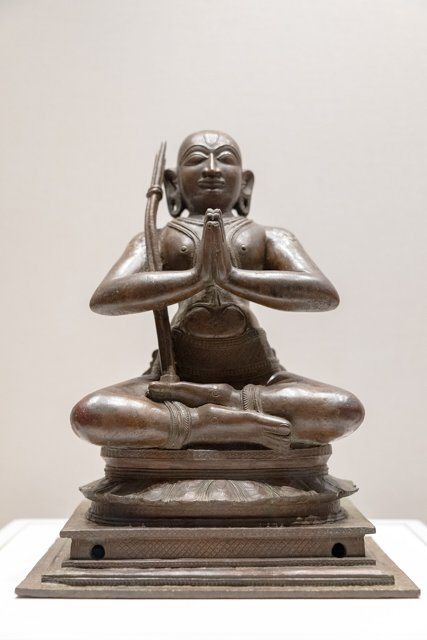

Sanjay index · Advanced Search · At a Glance
Sanjay index · Advanced Search · At a Glance


Rāmānuja in the inscriptions
Research note: records that name him, his works, his image or the institutions named for him. Lifetime c. 1017-1137. Sanjay area, not public.
At a glance
- Names him Refers to him, his teaching or his works, or a tradition about him.
- His following His image, shrine, festival or invocation, or an institution named for him (Rāmānujakūṭa feeding house, Rāmānuja-maṇḍapa, Yatirāja-maṭha).
- His lineage Pontiffs and maṭha heads in his line (Rāmānuja-jīyars; the Śṛṅgēri Bhāratis, Vidyāraṇya).
Counts are records, not inscriptions: one inscription can appear in more than one book (an Annual Report summary and its SII edition; EpCa's old series and its revised edition). Undated or date not read: 123 records.
| Place | Records | Earliest year |
|---|---|---|
| Śrīperumbudūr (birthplace) | 17 | 1556 |
| Kāñchīpuram | 25 | 1487 |
| Śrīraṅgam | 39 | 1435 |
| Mēlukōṭe / Tirunārāyaṇapura | 73 | 1256 |
| Toṇḍanūr / Toṇṇūr | 8 | 1150 |
| Śāligrāma | 1 | 1628 |
| Bēlūr | 2 | 1578 |
| Tirupati / Tirumala | 6 | 1365 |
| Ahōbalam | 10 | 1357 |
| Tirukkōvalūr | 0 | — |
Open these records in Advanced Search (category: Rāmānuja) to filter them further by dynasty, place or date, or with any other search.
What the records show (Claude's overview)
Almost nothing from his own lifetime. The earliest records that name him are a few grants of the 12th-13th centuries: at Toṇṇūr a donor calls himself "a servant of Iḷaiyāḻvāṉ (Rāmānuja)" (EpCa VI 205/698), and by the later 13th century his image (Emberumāṉār) is being set up and endowed in temples (Nandalūr, c. 1286; Kāñchī, where a chief also endowed teaching of the "Rāmānujīya Bhāṣyam"). Mēlukōṭe's Yatirāja-maṭha already had a Rāmānujakūṭa in 1256. The record sees his following, not his journeys.
Vijayanagara made him visible. Most of the 361 records are from c. 1450-1700. Three things recur: the Rāmānujakūṭa, a feeding house for Śrīvaiṣṇavas named after him (74 records, from Śrīraṅgam, Kāñchī and Tirupati to Ahōbalam, Kadiri and the Golconda country); the invocation "Śrīmatē Rāmānujāya namaḥ" heading grants, above all in Karnataka from the late 15th century (62 records); and his birth-star festival (Tiruvādirai in Chittirai) at Śrīperumbudūr, Mēlukōṭe, Ahōbalam, Kāñchī and Śrīraṅgam (12 records).
Traditions about him, set in stone. Later records repeat what the community remembered: the Yatirāja-maṭha at Mēlukōṭe "where once Śrī Bhāṣyakāra had taken his residence" (1544); "the Fifty-two, first disciples of Rāmānujāchārya" at Mēlukōṭe (1471-1585); land "noticed by Emberumānār as holy earth" (1319); the god at Śrīperumbudūr "worshipped by Śrī Bhāṣyakāra" (1572); a rock near Nāgamaṅgala where "Rāmānujāchārya came and did penance" (undated, painted in lime); families whose temple rights ran "from the time of Uḍaiyavar" (Śrīraṅgam, 1690); a donee descended from "the cook of Śrī Rāmānuja".
Spread and contest. Bukka I's settlement between Jainas and Śrīvaiṣṇavas at Śravaṇabeḷagoḷa (1368) opens "Rāmānuja triumphs, king of the yatis"; Telugu records name followers of "Rāmānuja Vaiṣṇavism" (1427, 1536); there are Rāmānuja-maṭhas at Athagoda (Ganjam) and on the Indrakīla hill (Vijayawada), and a "Rāmānuja-kōṭa" in the Badrīnārāyaṇa temple at Mandāsā (1882). On the other side, a Kūḍli Śṛṅgēri plate claims a Bhārati guru "victorious over the Rāmānuja doctrine" (its date "? 1154" is doubtful), and a 1545 charter honours an Emberumānār-jīyar for defending the Tirukkōvalūr shrine against Śaivas.
What would test the journeys: dated records at the places of his life before c. 1200 (the table above gives the earliest year found at each). Very few exist in these books.
Up to the 13th century
- 1133 — The god seated in the Rāmānuja-maṇḍapa at Tirukkōvalūr after the Āḍi bath. (are|1921-22|b|148)
- 1150 — A village given by "Tiruvaraṅga-dāsaṉ, a servant of Iḷaiyāḻvāṉ (Rāmānuja)", who had it from Hoysaḷa Narasiṁha, for the Viṇṇagar temple at Toṇṇūr (Yādavanārāyaṇa-chaturvēdimaṅgalam), c. 12th century. (epca|VI|205)
- 1154 — Kūḍli Śṛṅgēri plate: a Bhārati guru "victorious over the Rāmānuja doctrine" (editor's date ? 1154, doubtful). (epca|VII|70)
- 1231 — Income to Śrīnivāsa Rāmānuja Jīyar of the Teṅkalai at a ruling on the Dēvāṅgas' sacred thread; dated 1231 but in late characters. (are|1957-58|a|34)
- 1256 — Floor slab in the Yatirāja-maṭha, Mēlukōṭe: two villages to the Rāmānujakūṭa by a Terakaṇāmbi merchant, 1256. (epca|VI|294)
- 1256 — In the Yatirāja-maṭha: the Fifty-two and a Terakaṇāmbi merchant grant villages to the Rāmānujakūṭa, Mēlukōṭe, 1256 (English edition). (epca|VI|779)
- 1268 — The editor notes the record shows "Rāmānuja Śrīvaiṣṇavism had already spread to Telingana" in Rudramadēvī's time (donors named Rāmānujadāsa), 1268. (epte|III|19)
- 1284 — Offerings when the god is taken to the Rāmānujaṉ (garden or maṇḍapa), Nandalūr, 1284-85. (sii|xxiii||614)
- 1286 — Offerings, worship and lamps for the image of Emberumānār set up in the Śokkapperumāḷ temple at Nirandanūr (Nandalūr), Pāṇḍya year 10 (c. 1286). (sii|xxiii||592)
- 12th c. — Grant by Tiruvaraṅga-dāsaṉ, "a servant of Iḷaiyāḻvāṉ (Rāmānuja)", for the Kūttāṇḍi-viṇṇagar at Toṇṇūr, c. 12th century (English edition). (epca|VI|698)
- 13th c. — Iḷaiyāḻvāṉ Kāḷiṅgarāyar installs an image of Nāyaṉār Emberumāṉār in the Kāñchī Aruḷāḷa-perumāḷ temple and endows exposition of the "Rāmānujīya Bhāṣyam" (Śrībhāṣya), 13th century. (dika|Kanchipuram_1|202)
Every record
| Year | Class | Claude's summary · place | Record |
|---|---|---|---|
| 1133 | His following | The god seated in the Rāmānuja-maṇḍapa at Tirukkōvalūr after the Āḍi bath. Tirukkoilur, Tirukkoilur taluk, South Arcot district † — Tamil Nadu | are|1921-22|b|148 ARE |
| 1150 | Names him | A village given by "Tiruvaraṅga-dāsaṉ, a servant of Iḷaiyāḻvāṉ (Rāmānuja)", who had it from Hoysaḷa Narasiṁha, for the Viṇṇagar temple at Toṇṇūr (Yādavanārāyaṇa-chaturvēdimaṅgalam), c. 12th century. ತೊಣ್ಣೂರು, ಅದೇ ದೇವಾಲಯದ ಬಲಿಪೀಠದ ಬಾಗಿಲ ಉತ್ತರಕಡೆ ಭಿತ್ತಿಯ ಪೂರ್ವಮುಖದ ಆಡಿವರಿಸೆ ಕಲ್ಲು — toṇṇūru, adē dēvālayada balipīṭhada bāgi | epca|VI|205 EpCa |
| 1154 | Names him | Kūḍli Śṛṅgēri plate: a Bhārati guru "victorious over the Rāmānuja doctrine" (editor's date ? 1154, doubtful). At the same village, on a copper plate belonging to Kūḍli Śṛiṅgēri maṭṭ. | epca|VII|70 EpCa |
| 1231 | His lineage | Income to Śrīnivāsa Rāmānuja Jīyar of the Teṅkalai at a ruling on the Dēvāṅgas' sacred thread; dated 1231 but in late characters. MYSORE · MYSORE — Karnataka | are|1957-58|a|34 ARE |
| 1256 | His following | Floor slab in the Yatirāja-maṭha, Mēlukōṭe: two villages to the Rāmānujakūṭa by a Terakaṇāmbi merchant, 1256. ಮೇಲುಕೋಟೆ, Stone paved on the floor in the Yatiraja matha | epca|VI|294 EpCa |
| 1256 | His following | In the Yatirāja-maṭha: the Fifty-two and a Terakaṇāmbi merchant grant villages to the Rāmānujakūṭa, Mēlukōṭe, 1256 (English edition). Mēlukōṭe, Pandavapura taluk, Mandya district | epca|VI|779 EpCa |
| 1268 | His following | The editor notes the record shows "Rāmānuja Śrīvaiṣṇavism had already spread to Telingana" in Rudramadēvī's time (donors named Rāmānujadāsa), 1268. Burugugadda, Huzurnagar Taluk, Nalgonda District. | epte|III|19 EpTe |
| 1284 | His following | Offerings when the god is taken to the Rāmānujaṉ (garden or maṇḍapa), Nandalūr, 1284-85. Nandalūr, Rajampet Taluk, Cuddapah District — Andhra Pradesh | sii|xxiii||614 SII |
| 1286 | His following | Offerings, worship and lamps for the image of Emberumānār set up in the Śokkapperumāḷ temple at Nirandanūr (Nandalūr), Pāṇḍya year 10 (c. 1286). Nandalūru, Rajampet Taluk, Cuddapah District — Andhra Pradesh | sii|xxiii||592 SII |
| 1308 | His lineage | A Rāmānuja Jīyar among the temple's beneficiaries, Tirumōhūr, 1308. Tirumogur · Madurai North · MaduraiKalamega Perumal Temple, inside the southern outer wall. | dika|Madurai_1|168 DiKa |
| 1319 | Names him | Land "noticed by Emberumānār as tirumaṇ (holy earth)" given to Tirumaṇ-perumāḷ, Mēlukōṭe, 1319. ಮೇಲುಕೋಟೆ, ನಾಮದಕಟ್ಟೆ ತೋಟದಲ್ಲಿ ಗರುಡದೇವವರಗುಡಿಗೆ ವಾಯುವ್ಯದಲ್ಲಿ ನೆಟ್ಟ ಕಲ್ಲು — mēlukōṭe, nāmadakaṭṭe tōṭadalli garuḍadēvavaragu | epca|VI|297 EpCa |
| 1319 | Names him | Land "noticed by Emberumānār as tirumaṇ (holy earth)", Mēlukōṭe, 1319 (English edition). Mēlukōṭe, Pandavapura taluk, Mandya district | epca|VI|782 EpCa |
| 1331 | Names him | Gift of a garden by "a follower of Rāmānuja", Śrīkūrmam, 1331. Srikurmam · Chicacole Taluk · Ganjam District | mtl|I|5775 Topographical List |
| 1350 | His following | Land to the Rāmānuja-maṭha by the mahājanas, Pandavapura, c. 14th century. Pandavapura taluk, Mandya district | epca|VI|167 EpCa |
| 1357 | Names him | The donor chief "was an ardent devotee of Śrī Rāmānuja": gift to Ahōbalēśvara, 1357 (compiler's note). Yerragudidinne · Sirvel Taluk · Madras District | mtl|II|2576 Topographical List |
| 1365 | His following | Vijayanagara king orders Rāmānujakūṭas (feeding houses) at Tirupati and on Tirumala, worship supervised by Kandāḷa Rāmānujayya, 1365. On the north wall of the central shrine in the Govindarāja-Perumāḷ temple at Tirupati (Chandragiri taluk, Chittoor distr | are|1915-17|g|486 ARE |
| 1368 | His following | Bukka I's settlement between the Jainas and the bhaktas (Śrīvaiṣṇavas) at Śravaṇabeḷagoḷa opens with the verse "Rāmānuja triumphs, king of the yatis", 1368. ಭಂಡಾರ ಬಸದಿಯೊಳಗೆ ಪೂರ್ವದಿಕ್ಕಿನಲ್ಲಿ ನಿಲ್ಲಿಸಿರುವ ಒಂದನೆಯ ಶಾಸನ — bhaṁḍāra basadiyoḷage pūrvadikkinalli nillisiruva oṁdaneya śā | epca|II|459 EpCa |
| 1368 | His following | Opens with the verse "Rāmānuja triumphs, king of the yatis", Bukka I's time, 1368. At the same village, on a stone in Chikkanṇa's field. | epca|IX|226 EpCa |
| 1370 | His lineage | Navaḷa-jīya of Rāmānuja-jīya's line presents to Nammāḻvār, Mēlukōṭe, 1370. Melukōṭe, Pandavapura taluk, Mandya district | epca|VI|761 EpCa |
| 1379 | His following | On the Uḍaiyavar shrine in the Varadarāja temple, Yāḷamari, 1379. Yāḷamari † | are|1958-59|b|56 ARE |
| 1410 | His following | Grant for offerings and the Rāmānujakūṭa, Siṅgāpura (Yelahanka), 1410. At Yelahanka (Yelahanka hobli), at the base of Garuda-kambha in front of the Gōpāla-Krishna temple in fort. | epca|IX|34 EpCa |
| 1427 | Names him | A Rāvu Mādhava is "a follower of Śrī Rāmānuja Vaiṣṇavism", Dēvalanagaram, 1427. Devalanagaram. | epte|IV|20 EpTe |
| 1435 | His lineage | Rāmānuja-Jīyar of the Piḷḷai Lōkāchārya Jīyar line gives money for the Tiruvadhyayanam festival. BIJAPUR DISTRICT / SINDI TALUK · Srirangam — Karnataka | are|1935-38|f|1273 ARE |
| 1450 | Names him | A fragmentary verse in praise of Rāmānuja-muni, Śrīraṅgam, 15th century. TRICHINOPOLY DISTRICT / TRICHINOPOLY TALUK — Tamil Nadu | are|1935-38|f|100 ARE |
| 1458 | His lineage | Lands made over to Rāmānuja-jīya to keep the maṭha and the Rāmānujakūṭa, 1458. Pandavapura taluk, Mandya district | epca|VI|291 EpCa |
| 1458 | His following | "The command of Yatirāja ... crusher of evil doctrines"; a Raṅga-maṭha to feed 24 Vaiṣṇavas as a Rāmānujakūṭa, Mēlukōṭe, 1458. Mēlukōṭe, Pandavapura taluk, Mandya district | epca|VI|776 EpCa |
| 1458 | His following | Land to the Rāmānujakūṭa in the Kadiri temple, 1458. Kadiri · Hindupūr Taluk · Anantapur District | mtl|I|108 Topographical List |
| 1465 | His following | Shares of offerings for Kandāḍai Rāmānuja Ayyaṅgār, agent of the Rāmānujakūḍam, Tirumala, 1465. TIRUMALAI, CHANDRAGIRI TALUK, CHITTOOR DISTRICT — Andhra Pradesh | sii|xvii||276 SII |
| 1467 | His following | Rāmānujakūṭa (feeding house) newly built at Tirupati; worship supervised by Kandāḷa Rāmānujayya, 1467. CHANDRAGIRI TALUK, CHITTOOR DISTRICT — Andhra Pradesh | sii|ix|ii|462 SII |
| 1471 | His following | Opens "Śrīmatē Rāmānujāya namaḥ"; grant to a Śrīvaiṣṇava servant of Cheluvapiḷḷe (Mēlukōṭe), Dēvalāpura, 1471. Nagamangala taluk, Mysore district | epca|IV|738 EpCa |
| 1471 | Names him | "The Fifty-two Śrīvaiṣṇavas, first disciples of Rāmānujāchārya", Mēlukōṭe, 1471. Melukōṭe, Pandavapura taluk, Mandya district | epca|VI|760 EpCa |
| 1475 | His following | Opens "Obeisance to the glorious Rāmānuja", Inugurti (Warangal), 1475. Inugurti, Kesamudram Mandal, Warangal District. | epte|IV|215 EpTe |
| 1478 | Names him | Buyer's ancestors were "at the time of Uḍaiyar (Rāmānuja)": a family tracing itself to his day, 1478. On the same wall (Saurāja-Perumāḷ temple) † | are|1922-23|b|229 ARE |
| 1483 | His following | Offerings after the service called Ayōdhyā Rāmānujaiyaṉ avasaram, Śrīraṅgam, 1483. Srirangam, Tiruchirapalli District — Tamil Nadu | sii|xxiv||345 SII |
| 1487 | His following | A fourth of temple offerings to the Rāmānujakūṭa-maṭham, 1487. TINNEVELLY DISTRICT, TENKASI TALUK — Tamil Nadu | are|1918-21|e|1030 ARE |
| 1487 | His following | Share of offerings for Kandāḍai Rāmānujayyaṅgār's Rāmānujakūṭam, Kāñchī, 1487. Kanchipuram · Kanchipuram · KanchipuramArulalaperumal Temple, Mother (Thayar) shrine, west and south walls. | dika|Kanchipuram_2|139 DiKa |
| 1489 | His following | Villages granted for offerings at the Rāmānujaṉ-avasaram and feeding in a Rāmānujakūṭam at Śrīraṅgam, 1489. BIJAPUR DISTRICT / SINDI TALUK · Srirangam — Karnataka | are|1935-38|f|1279 ARE |
| 1489 | His following | Opens "Śrīmatē Rāmānujāya namaḥ", Terakaṇāmbi (Gundlupet), 1489. Gundlupete taluk, Mysore district | epca|III|115 EpCa |
| 1489 | His following | Opens "Obeisances to illustrious Rāmānuja", Terakaṇāmbi, 1489. Terakaṇāmbi, Gundlupete taluk, Mysore district | epca|III|884 EpCa |
| 1489 | His following | Opens "Rāmānujāya namaḥ", Terakaṇāmbi, 1489 (old-series edition). On the back of the same stone. [→ At the same village, on a stone to the east, in the patala-mantapa of the Ramalhadra t | epca|IV|286 EpCa |
| 1489 | His following | Offerings at the Rāmānujaiyaṉ-avasaram and feeding in the Rāmānuja-kūṭam, Śrīraṅgam, 1489. Srirangam, Tiruchirapalli District — Tamil Nadu | sii|xxiv||346 SII |
| 1497 | His following | Part of offerings for the Rāmānujakūṭam, Śrīraṅgam, 1497. BIJAPUR DISTRICT / SINDI TALUK · Srirangam — Karnataka | are|1935-38|f|1271 ARE |
| 1497 | His following | Part of the offerings for feeding at Kandāḍai Rāmānujayyaṅgār's Rāmānujakūṭam, Śrīraṅgam, 1497. Srirangam, Tiruchirapalli District — Tamil Nadu | sii|xxiv||355 SII |
| 1500 | His following | Disciple of the dharmakartā of the Rāmānuja-kūṭam at Tiruvaraṅgam builds a gōpura, 1500. TRICHINOPOLY DISTRICT / TRICHINOPOLY TALUK — Tamil Nadu | are|1935-38|f|104 ARE |
| 1500 | His following | The dharmakartā of the Rāmānujakūṭam builds a temple and sets up images, Śrīraṅgam, 1500. Srirangam, Tiruchirapalli District — Tamil Nadu | sii|xxiv||357 SII |
| 1506 | His following | An endowment named for him (Rāmānujaṉ-tirunāmattukkāṇi) at Nīrandanūr, 1506. On a third slab set up in the Saundarēśvarasvāmin temple † | are|1906-10|c|1153 ARE |
| 1512 | His lineage | Rāmānuja-jīyar in a Kollegal grant for Kāñchi Varadarāja. KOLLEGAL TALUK, COIMBATORE DISTRICT — Tamil Nadu | sii|ix|ii|701 SII |
| 1513 | His following | Food for Vaiṣṇavas in the Kandāḍai Rāmānujayyaṅgār-maṇḍapam, 1513. TRICHINOPOLY DISTRICT · TRICHINOPOLY DISTRICT—contd. / Trichinopoly taluk—contd. / Srirangam—contd. — Tamil Nadu | are|1935-38|f|1334 ARE |
| 1514 | His following | Share of a festival offering to the Rāmānujakūṭa, Śrīraṅgam, 1514. Srirangam, Tiruchirapalli District — Tamil Nadu | sii|xxiv||368 SII |
| 1518 | Names him | Grant to Tibbaseṭṭi of Aitabelūr, "first disciple of Śrī Rāmānujāchārya, establisher of the six systems", promoter of the Rāmānuja doctrine, Mēlukōṭe, 1518. Pandavapura taluk, Mandya district | epca|VI|247 EpCa |
| 1518 | Names him | "The Fifty-two, establishers of the philosophy of Rāmānuja, first disciples of the establisher of the Vedic religion", Mēlukōṭe, 1518. Melukōṭe, Pandavapura taluk, Mandya district | epca|VI|735 EpCa |
| 1518 | Names him | Tibbaseṭṭi's family, "first disciples of Śrī Rāmānujāchārya", promoters of his doctrine, Mēlukōṭe (old-series edition), 1518. ಅದೇ ಉತ್ತರ ಕಡೆ ಇತ್ತಿರುವ ಹೊಸಬಾಗಿಲಿನ ಎಡಪಾರ್ವದ 1ನೆಯ ಕಾಸನ. — adē uttara kaḍe ittiruva hosabāgilina eḍapārvada 1neya kāsana., | epca|XIV|496 EpCa |
| 1518 | His following | Shares to the Rāmānuja-kūṭam to feed Śrīvaiṣṇavas, Śrīraṅgam, 1518. Srirangam, Tiruchirapalli District — Tamil Nadu | sii|xxiv||372 SII |
| 1520 | His following | Opens "Śrīmatē Rāmānujāya namaḥ", Terakaṇāmbi (Gundlupet), Kṛṣṇadēvarāya's time, 1520. Gundlupete taluk, Mysore district | epca|III|114 EpCa |
| 1520 | His following | Opens "Obeisance to Rāmānuja", Rāmabhadra temple, Terakaṇāmbi, 1520. Terakaṇāmbi, Gundlupete taluk, Mysore district | epca|III|883 EpCa |
| 1520 | His following | Opens "Rāmānujāya namaḥ", Terakaṇāmbi, 1520 (old-series edition of the same stone). At the same village, on a stone to the east, in the patala-mantapa of the Ramalhadra temple. | epca|IV|285 EpCa |
| 1520 | His following | Opens "Śrīmatē Rāmānujāya namaḥ", Terakaṇāmbi, 1520 (old-series edition). ತೆರಕಣಾಂಬಿ ಹೋಬಳಿಯಲ್ಲಿ ತೆರಕಣಾಂಬಿಯಲ್ಲಿ ರಾಮಭದ್ರ ದೇವಾಲಯದ ಪಾತಾಳಾಂಕಣದಲ್ಲಿ ನಟ್ಟಿಕಲ್ಲು. ಪ್ರಮಾಣ 5′ 6″ × 3′ — terakaṇāṁbi hōbaḷiyal | epca|XIV|67 EpCa |
| 1520 | Names him | Mentions Rāmānuja-muni, "the reformer of Vaiṣṇavism", in a Vijayanagara grant, Kundapura, 1520. COONDAPUR TALUK, SOUTH KANARA DISTRICT — Karnataka | sii|ix|ii|512 SII |
| 1524 | His following | Village granted to Śrīraṅgam for feeding devotees in the Rāmānuja-kūṭam (Kṛṣṇadēvarāya's minister), 1524. TRICHINOPOLY DISTRICT / TRICHINOPOLY TALUK · TRICHINOPOLY TALUK. † — Tamil Nadu | are|1929-30|b|240 ARE |
| 1524 | His following | Village to the keeper of the Rāmānuja-kūṭa, Siṅgāpura, Kṛṣṇadēvarāya's time, 1524. At Chikka Beṭṭahaḷḷi (Yelahanka hobli), on a stone to the south of the Hanumanta temple. | epca|IX|36 EpCa |
| 1525 | His following | Opens "Obeisance to the illustrious Rāmānuja"; pay for the manager of the Rāmānujakūṭa, Mēlukōṭe, 1525. Melukōṭe, Pandavapura taluk, Mandya district | epca|VI|759 EpCa |
| 1527 | His following | Opens "Śrīmatē Rāmānujāya namaḥ"; lands at Toṇḍanūr granted to Mēlukōṭe, Kṛṣṇadēvarāya's time, 1527. ಮೇಲುಕೋಟೆ, Inscription on the lower part of the north wall of the enclosure of the same temple. [→ Pandavapura taluk, Man | epca|VI|246 EpCa |
| 1527 | His following | Opens "Obeisance to the illustrious Rāmānuja"; Toṇḍanūr ploughing dues remitted, Mēlukōṭe, 1527. Mēlukōṭe, Pandavapura taluk, Mandya district | epca|VI|734 EpCa |
| 1528 | His following | Opens "Obeisance to Rāmānuja": a village for Mādhava of Muttatti, by a grandson of Kṛṣṇarāya, 1528. At Muttatti (Dudda hobli), on a stone near the Mādhavarāya temple. | epca|V_ptII|283 EpCa |
| 1529 | His following | On the Uḍaiyavar shrine, Yāḷamari, 1529. Yāḷamari † | are|1958-59|b|57 ARE |
| 1530 | His following | Agreement with the agent of the Rāmānuja-kūṭa-maṭham, Kāñchī, 1530. TINNEVELLY DISTRICT, TENKASI TALUK — Tamil Nadu | are|1918-21|e|1028 ARE |
| 1530 | His lineage | Ammaṇ-Rāmānuja-jīyar of the Mudaliyār shrine, 1530. NILGIRIS DISTRICT OOTACAMUND TALUK · MADRAS † — Tamil Nadu | are|1952-53|b|312 ARE |
| 1530 | His following | Agreement with the administrator of the Rāmānujakūṭa maṭha, Sannidhi street, Kāñchī, 1530. Kanchipuram · Kanchipuram · KanchipuramNorth wall of the Thayar Sannidhi in the Arulalaperumal temple. | dika|Kanchipuram_2|136 DiKa |
| 1530 | His following | Agreement for the charities of the Rāmānuja-kūṭa, Kāñchī, 1530. South wall of the Tayar shrine | dika|Kanchipuram_2|195 DiKa |
| 1530 | His following | Village for the god Tiruvēṅgaḷanātha of Siṅgāpura, to be held by the Rāmānuja-kūṭa, 1530. At Hārohaḷḷi (Yelahanka hobli), on a stone near the Añjanēya temple. | epca|IX|43 EpCa |
| 1533 | Names him | The Fifty-two, disciples of Rāmānujāchārya "establisher of the six darśanas", Mēlukōṭe, 1533. Melukoṭe, Pandavapura taluk, Mandya district | epca|VI|738 EpCa |
| 1533 | Names him | Mēlukōṭe grant naming the establisher of the Vedic path Śrī Rāmānujāchārya and his first disciples (old-series edition), 1533. ಅದೇ ಸ್ಥಳದಲ್ಲಿ 4ನೆಯ ಶಾಸನ. — adē sthaḷadalli 4neya śāsana., Nanjangud taluk, Mysore district | epca|XIV|499 EpCa |
| 1534 | Names him | Village to "the fifty-two ayyas, disciples of Rāmānujāchārya", devotees of Sampatkumāra at Mēlukōṭe, 1534. ಮೇಲುಕೋಟೆ, On the stones of the third tier from the top, to the east of the southern enclosure inside the same temple. [→ | epca|VI|239 EpCa |
| 1534 | Names him | Grant to a teacher "whose mind delights in the Śrībhāṣya", master of both Vedāntas, 1534. Copy of a sâsana from Miṇḍagal-jôḍidâr. | epca|X|1236 EpCa |
| 1534 | His following | A fourth of the offerings to the Rāmānujakūṭam, Śrīraṅgam, 1534. Srirangam, Tiruchirapalli District — Tamil Nadu | sii|xxiv||416 SII |
| 1535 | His following | Opens "Śrīpatē Rāmānujāya namaḥ", Mēlukōṭe, Achyutarāya's time, 1535. ಮೇಲುಕೋಟೆ, The basement stone of the north wall of the same temple. [→ Pandavapura taluk, Mandya district] | epca|VI|237 EpCa |
| 1535 | His following | Opens "Obeisance to the illustrious Rāmānuja", Mēlukōṭe, 1535. Mēlu-kōṭe, Pandavapura taluk, Mandya district | epca|VI|727 EpCa |
| 1535 | His following | The Aḻagiya-maṇavāḷa-Jīyar maṭha alias Rāmānuja-maṭha, Śrīraṅgam, 1535. Srirangam, Tiruchirapalli District — Tamil Nadu | sii|xxiv||422 SII |
| 1536 | Names him | Śrī Raṅgayya "established Śrī Rāmānujāchārya's Śrīvaiṣṇavism" with grants at Rāyalagaṇḍi, 1536. Kommarapalli [Rayalagandi], Nagarkurnool Taluk. | epte|IV|27 EpTe |
| 1537 | His following | Share for feeding Śrīvaiṣṇavas at the donor's Rāmānujakūṭa, Śrīraṅgam, 1537. Srirangam, Tiruchirapalli District — Tamil Nadu | sii|xxiv||429 SII |
| 1538 | His lineage | Privileges to Rāmānuja-dāsari of the Rāmānuja-dāsari line for restoring worship after anarchy, 1538. | are|1934-35|a|10 ARE |
| 1538 | His following | Temple food shares for the Rāmānujakūṭam, Kāñchī, 1538. Kanchipuram · Kanchipuram · KanchipuramArulalaperumal Temple, second circumambulatory path, north wall | dika|Kanchipuram_2|100 DiKa |
| 1538 | His lineage | Kandāḍai Rāmānuja-jīyar, one of the temple managers, 1538. On the north wall of the second prakara | dika|Kanchipuram_2|185 DiKa |
| 1539 | His following | Grant renewed through the Rāmānuja-kūṭam, Tiruchirappalli, 1539. TRICHINOPOLY DISTRICT / TRICHINOPOLY TALUK · TRICHINOPOLY TALUK. † — Tamil Nadu | are|1929-30|b|245 ARE |
| 1542 | His lineage | Vaiṣṇavas of the Emberumānār-Jīyar sannidhi street, Tirukkōvalūr, 1542. Tirukkoilur, Tirukkoilur taluk, South Arcot district † — Tamil Nadu | are|1921-22|b|155 ARE |
| 1543 | His following | Opens "Śrīmatē Rāmānujāya namaḥ", Veṅkaṭapatirāya's time, 1543. At the same village, on a stone in Aṅgârada Chinnappa's field. | epca|X|200 EpCa |
| 1544 | His following | Opens "Śrīmatē Rāmānujāya namaḥ"; a famine-time arrangement, Mēlukōṭe, 1544. Mēlukōṭe, First inscription on the right side of the same doorway [→ Pandavapura taluk, Mandya district] | epca|VI|241 EpCa |
| 1544 | Names him | The temple's seal allowed to the Yatirāja-maṭha "where once Śrī Bhāṣyakāra, i.e. Rāmānujāchārya, had taken his residence", Mēlukōṭe, 1544. Pandavapura taluk, Mandya district | epca|VI|242 EpCa |
| 1544 | His lineage | Shares for the Rāmānujakūṭa and for the Fifty-two of Vēdānti Rāmānuja-jīya's maṭha, Mēlukōṭe, 1544. Melukote, Pandavapura taluk, Mandya district | epca|VI|729 EpCa |
| 1544 | His following | Grant "after prostrating to the illustrious establisher of the Vedic religion" (Rāmānuja), Mēlukōṭe, 1544. Mēlukōte, Pandavapura taluk, Mandya district | epca|VI|730 EpCa |
| 1544 | His lineage | Grant to Vēdānti Rāmānuja-jīya, Mēlukōṭe (old-series edition), 1544. ಅದೇ ಸ್ಥಳದಲ್ಲಿ 2ನೆಯ ಶಾಸನ. — adē sthaḷadalli 2neya śāsana., Nanjangud taluk, Mysore district | epca|XIV|491 EpCa |
| 1544 | His following | Village given to the Rāmānuja-kūṭam at Ahōbalam, Sadāśivarāya's time, 1544. Mādūru · Proddatur Taluk · Cuddapah District | mtl|I|5227 Topographical List |
| 1545 | His lineage | Charter to Emberumānār Jīyar for defending Vaiṣṇavas when Śaivas of Kīlūr invaded the Tirukkōvalūr shrine, 1545. Sarangarh. | are|1953-54|a|17 ARE |
| 1546 | His lineage | Māmalai Rāmānuja-jīyar decides a dispute over Tirunāgēśvaram, 1546. R † | are|1956-57|a|50 ARE |
| 1548 | His following | Mēlukōṭe temple grant naming Rāmānuja, 1548 (Kannada text). Pandavapura taluk, Mandya district | epca|VI|245 EpCa |
| 1550 | His following | Land for the feeding house Śrībhāṣyakāra-Rāmānujakūṭa, Tiruveḷḷaṟai, 1550. TRICHINOPOLY DISTRICT / LALGUDI TALUK · Tiruveḷḷaṟai — Tamil Nadu | are|1935-38|f|1474 ARE |
| 1550 | His following | A Rāmānuja maṭha (?) in Sannidhi street, Kāñchī, 16th century. Kanchipuram · Kanchipuram · KanchipuramArulalaperumal temple, north wall of the enclosure (tiruccurru). | dika|Kanchipuram_2|65 DiKa |
| 1550 | His following | On the doorpost of the Rāmānuja-maṇḍapam, Viṭṭalāpuram; service under the Piḷḷai Lōkāchārya Jīyar, 16th century. Vittalapuram · Tirukkalukundram · KanchipuramOn the doorpost of the Ramanuja Mandapam located in the northwest corner of | dika|Kanchipuram_unnumbered|47 DiKa |
| 1550 | His following | Opens "Śrīmatē Rāmānujāya namaḥ": Arakunda to Penugoṇḍe Narasiṁha-Tātāchārya with Rāmarāja's leave, c. 1550. At Arakunda (Manchēnahalli hobli), on a stone in front of the Āñjanēya temple. | epca|X|1117 EpCa |
| 1550 | His following | A sacred tank called Rāmānuja-puṣkariṇī built with a temple, Neḍumaram. Nedumaram, Madurantakam Taluk, Chingleput District — Tamil Nadu | sii|xxxviii||270 SII |
| 1551 | His following | The agrahāra Śrībhāṣyapuram (named for his Śrībhāṣya), Cuddapah, 1551. CUDDAPAH DISTRICT — Andhra Pradesh | are|1935-38|f|782 ARE |
| 1551 | Names him | Grant at Bajagūru naming "the establisher of the six systems, the establisher of the Vedic path, the glorious Rāmānujāchārya" with Nārāyaṇa and Cheluvapiḷḷe of Mēlukōṭe, 1551. At Bajagūru (Nonavinakere hobli), on a stone near the village entrance. | epca|XVI|201 EpCa |
| 1551 | His following | The agrahāra Śrī Bhāṣyapuram, Sambaṭūru, 1551 (SII edition). SAMBAṬŪRU, KAMALAPURAM TALUK, CUDDAPAH DISTRICT — Andhra Pradesh | sii|xxxi||107 SII |
| 1552 | His following | Village granted for a Rāmānujakūṭa (feeding house) in the shrine of Bhāṣyakāra inside the Ahōbalam temple, 1552. On the same wall (Narasiṁhavāmin shrine) † | are|1915-17|c|56 ARE |
| 1552 | His following | Rāmānujakūṭa in the shrine of Bhāṣyakāra, Ahōbalam, 1552 (Topographical List entry). Lower Ahōbalam · Sirvēl Taluk · Kurnool District | mtl|II|2493 Topographical List |
| 1553 | His following | Money for the Rāmānujakūṭam at Śrīraṅgam and its Nāchchiyār, 1553. BIJAPUR DISTRICT / SINDI TALUK — Karnataka | are|1935-38|f|1307 ARE |
| 1553 | His following | Offerings and feeding in the Kandāḍai Aṇṇaṉ Rāmānujakūṭam, Śrīraṅgam, 1553. Srirangam, Tiruchirapalli District — Tamil Nadu | sii|xxiv||475 SII |
| 1554 | His following | Opens "Śrīmatē Rāmānujāya namaḥ", Sadāśivarāya's time, 1554. At the same village, on a stone lying in front of the Narasimha-temple. | epca|XVI|240 EpCa |
| 1554 | His following | Kalyāṇa-maṇḍapa at Sambaṭūru alias Śrī Bhāṣyapuram, 1554. SAMBATŪRU, KAMALAPURAM TALUK, CUDDAPAH DISTRICT — Andhra Pradesh | sii|xxxi||206 SII |
| 1555 | His lineage | Village to Rāmānujaṅgār of the Pāpavināśa maṭha, 1555. KURNOOL DISTRICT / NANDIKOTKUR TALUK — Andhra Pradesh | are|1939-44|b|1271 ARE |
| 1555 | His following | Offerings on the birth stars of the Āḻvārs and ācāryas, Emberumāṉār's Tiruvādirai among them, Kāñchī, 1555. Kanchipuram · Kanchipuram · KanchipuramRight side wall on the western side of the entrance to the third circumambulatory | dika|Kanchipuram_2|145 DiKa |
| 1556 | His following | Gifts to the images of Rāmānuja and Nammāḻvār. TINNEVELLY DISTRICT · Nomallapūḍi — Tamil Nadu | are|1932-33|b|318 ARE |
| 1556 | His following | Kalyāṇa-maṇḍapa at Sambaṭūru alias Śrībhāṣyapuram, 1556. CUDDAPAH DISTRICT — Andhra Pradesh | are|1935-38|f|789 ARE |
| 1556 | His following | Opens "Śrīmatē Rāmānujāya namaḥ", Mēlukōṭe, 1556. Mēlukōṭe, ಅದೇ ದೇವಸ್ಥಾನದ ಬಾಗಿಲಲ್ಲಿ ಪಶ್ಚಿಮಕಡೆ ನೆಟ್ಟ ಕಲ್ಲು | epca|VI|238 EpCa |
| 1556 | His lineage | Villages granted to "the great sage Rāmānuja" (a jīyar) before Viṭṭhalēśvara on the Tuṅgabhadrā, 1556. Yalaṅgāvu · Eraneil Taluk · Travancore State | mtl|III|2384 Topographical List |
| 1556 | His following | Inscription beginning with Rāmānuja's name: Sadāśivarāya grants villages to the Śrīperumbudūr temple, 1556. Sriperumbudur · Saidapet Taluk · Chingleput District | mtl|I|3407 Topographical List |
| 1557 | His lineage | Rāmānuja-jīyar, agent of the Ahōbalam temple's manager, sells land, 1557. On the third slab set up in the Narasiṁhavāmin temple. † | are|1915-17|c|64 ARE |
| 1557 | His following | Chudiperla alias Śrībhāṣyapura, Cuddapah, 1557. CUDDAPAH DISTRICT — Andhra Pradesh | are|1935-38|f|786 ARE |
| 1557 | Names him | A devotee of Bhaṭṭar, "successor of Rāmānuja", gives land for feeding Śrīvaiṣṇavas, 1557 (SII edition). Tiruchinapalli Taluk | sii|xxxiii||253 SII |
| 1557 | His following | Śrī Bhāṣyapuram: offerings to Kēśava-perumāḷ, 1557. SAMBAṬŪRU, KAMALAPURAM TALUK, CUDDAPAH DISTRICT — Andhra Pradesh | sii|xxxi||118 SII |
| 1557 | His following | Śrī Bhāṣyapuram: festivals of Chennarāya, 1557. CHIḌIPIRĀLA, KAMALAPURAM TALUK, CUDDAPAH DISTRICT — Andhra Pradesh | sii|xxxi||119 SII |
| 1558 | His following | Gift to Ādikēśava-Perumāḷ and Śrī-Bhāṣyakāra (Rāmānuja) at Śrīperumbudūr, 1558. Srīperumbudūr, Śrīperumbudūr taluk, Chingleput district † — Tamil Nadu | are|1921-22|c|183 ARE |
| 1558 | Names him | Gift by a devotee of Bhaṭṭar, "successor of Rāmānuja", for feeding Śrīvaiṣṇavas, 1558. NILGIRIS DISTRICT OOTACAMUND TALUK · Śrīraṅgam † — Tamil Nadu | are|1952-53|b|294 ARE |
| 1558 | His lineage | Emberumānār-Jīyaṅgār, agent of the Vaṇ-Śaṭhakōpa Jīyar, gives for Ahōbalam festivals, 1558. PEDDA AHŌBALAM, SIRVEL TALUK, KURNOOL DISTRICT — Andhra Pradesh | sii|xvi||235 SII |
| 1559 | His lineage | Emberumānār Jīyar, a Vaiṣṇava sannyāsin, Mārkāpur, 1559. Mārkāpur · Mārkāpur Taluk · Kurnool District | mtl|II|2140 Topographical List |
| 1559 | His lineage | Rāmānuja Jīyaṅgār exempts a barbers' tax, Chintakuṇṭa, 1559. Chintakuṇṭa · Sirvel Taluk · Kurnool District | mtl|II|2534 Topographical List |
| 1564 | His following | Villages for the 12-day birth-star festival of Bhāṣyakāra (Rāmānujāchārya), the flower garden and the Rāmānujakūṭa, Mēlukōṭe, 1564. Pandavapura taluk, Mandya district | epca|VI|240 EpCa |
| 1564 | His following | Village income for the Āḻvārs' birth stars and the car festival of Bhāṣyakāra (Rāmānujāchārya), Mēlukōṭe, 1564. Mēlukōṭe, Pandavapura taluk, Mandya district | epca|VI|728 EpCa |
| 1565 | His following | Tank income for offerings to Ādikēśava-Perumāḷ and Emberumānār at Śrīperumbudūr, 1565. Srīperumbudūr, Śrīperumbudūr taluk, Chingleput district † — Tamil Nadu | are|1921-22|c|184 ARE |
| 1566 | His lineage | Lands earlier granted to Ekānta Rāmānuja-jīyar, 1566. ಮೋಳಾಪುರ, ಮಾರಿಗುಡಿಯ ಪೂರ್ವದಿಕ್ಕಿನ ಗೋಡೆಗೆ ಪೂರ್ವಭಿಮುಖಿ ಒರಸಿರುವ ಕಲ್ಲು — mōḷāpura, māriguḍiya pūrvadikkina gōḍege pūrvabhimukh | epca|VI|490 EpCa |
| 1570 | Names him | Names the "first disciples of Śrī Rāmānujācārya, establisher of the Vedic path"; shares for worship and the Rāmānuja-kūṭa, Mēlukōṭe, 1570. ಮೇಲುಕೋಟೆ, ಅದೇ ಸ್ಥಳದಲ್ಲಿ, ಎರಡನೆಯ ಶಾಸನ — mēlukōṭe, adē sthaḷadalli, eraḍaneya śāsana, Pandavapura taluk, Mandya district | epca|VI|244 EpCa |
| 1570 | Names him | "The Fifty-two Ayyas, first disciples of Rāmānujāchārya" at Mēlukōṭe, 1570. Mēlukōṭe, Pandavapura taluk, Mandya district | epca|VI|732 EpCa |
| 1570 | Names him | The Fifty-two Ayyas, disciples of Śrī Rāmānujāchārya; share for the Rāmānujakūṭa (old-series edition), 1570. ಅದೆ ಸ್ಥಳದಲಿ 2ನೆಯ ಶಾಸನ. — ade sthaḷadali 2neya śāsana., Nanjangud taluk, Mysore district | epca|XIV|493 EpCa |
| 1570 | His following | Opens "Obeisance to Rāmānuja": a village renamed Kṛṣṇāpura, Sadāśivarāya's time, ? 1570. At the same village, on the rock called Toṭōni-baṇḍe, west of the village. | epca|X|1321 EpCa |
| 1572 | Names him | Grant to Ādikēśava-Perumāḷ "who had been worshipped by Śrī-Bhāṣyakāra (Rāmānuja)" at Śrīperumbudūr, 1572. Srīperumbudūr, Śrīperumbudūr taluk, Chingleput district — Tamil Nadu | are|1921-22|c|182 ARE |
| 1572 | Names him | Ādikēśava-perumāḷ "who had been worshipped by the Śrībhāṣyakāra" at Śrīperumbudūr, 1572 (SII edition). SRĪPERUMBUDŪR, SRIPERUMBUDUR TALUK, CHINGLEPUT DISTRICT — Tamil Nadu | sii|xvi||282 SII |
| 1574 | His following | Royal order for the recitation of the Yatirāja-saptati (verses on Rāmānuja) at Mēlukōṭe, 1574. Melukōṭe, Pandavapura taluk, Mandya district | epca|VI|736 EpCa |
| 1578 | His following | Provision for offerings on Rāmānujāchārya's monthly and yearly birth-star days, by the Rāmānujāchārya shrine at Bēlūr, 1578. In Bēlūru, on a stone south-east of the Rāmānujāchārya shrine | epca|V_ptII|317 EpCa |
| 1581 | His lineage | Village given to Rāmānujāchārya of Mēlukōṭe before god Cheluvapiḷḷe, 1581. ಚಿನಕರಳ್ಳ ಹೋಬಳಿ ಚಿನಕರಳ್ಳ ಗ್ರಾಮದ ಆಂಜನೇಯ ದೇವಸ್ಥಾನದ ಮುಂದೆ ನೆಟ್ಟ ಕಲ್ಲಿನಲ್ಲಿ. — cinakaraḷḷa hōbaḷi cinakaraḷḷa grāmada āṁjanēy | epca|IV|617 EpCa |
| 1581 | His lineage | Village to Rāmānujāchārya of Mēlukōṭe before god Cheluvapiḷḷe, 1581 (new-series edition). Pandavapura taluk, Mandya district | epca|VI|162 EpCa |
| 1581 | His lineage | Village Chilukurli to Rāmānujāchārya before Cheluvapiḷḷe, Rāmarāja's agent, 1581. Chinakuraḷi, Pandavapura taluk, Mandya district | epca|VI|659 EpCa |
| 1582 | His following | Offerings to Ādikēśava-Perumāḷ and Śrī-Bhāṣyakāra (Rāmānuja) on festival days, Śrīperumbudūr, 1582. Srīperumbudūr, Śrīperumbudūr taluk, Chingleput district † — Tamil Nadu | are|1921-22|c|191 ARE |
| 1582 | His following | Invocation "Rāmānujāya namaḥ" in a Kāñchī grant, 1582. Kanchipuram · Kanchipuram · KanchipuramSecond circumambulatory path, north wall of the Arulalaperumal temple | dika|Kanchipuram_2|112 DiKa |
| 1583 | His following | Temple food sold in perpetuity for a Rāmānujakūṭam, Tirukkaṇṇamaṅgai, 1583. RAMNAD DISTRICT / TIRUPPATTUR TALUK · Tirukkaṇṇamaṅgai † — Tamil Nadu | are|1946-47|b|73 ARE |
| 1583 | His lineage | Opens "Obeisance to Rāmānuja": land to Mālyavanta Rāmānuja-jīya, Chitradurga, Sadāśivarāya's time, c. 1583. ಅದೇಹೋಬಳ ರಂಗಸಮುದ್ರದ ಕೆರೆಯ ಕೆಳಗೆ ಇರುವ ನಾರಹೀರೆಂಗನೆ ಜವಿಸಾನಿನರ್ಲಿರುವ ಕಲ್ಲು — adēhōbaḷa raṁgasamudrada kereya keḷage iruva nār | epca|XI|358 EpCa |
| 1583 | His lineage | Telugu text of the grant to Mālyavanta Rāmānuja-jīya on the Tuṅgabhadrā, 1583. Hiriyūr taluk, Chitaldroog district | epca|XI|359 EpCa |
| 1583 | His following | Feeding Śrīvaiṣṇavas in the Rāmānuja-kūṭam, Śrīraṅgam, 1583. Srirangam, Tiruchirapalli District — Tamil Nadu | sii|xxiv||504 SII |
| 1584 | His following | Village for worship and a Rāmānuja-kūṭam (feeding house), Śrīraṅgam, 1584. TRICHINOPOLY DISTRICT / TRICHINOPOLY TALUK · TRICHINOPOLY TALUK—contd. / Śrīrangam—contd. — Tamil Nadu | are|1935-38|f|621 ARE |
| 1584 | His following | Income for Viṭṭhalēśvara of Kōgilakuṇṭla and a Rāmānuja-kūṭam, 1584. CHINNA AHŌBALAM, SIRVEL TALUK, KURNOOL DISTRICT — Andhra Pradesh | sii|xvi||296 SII |
| 1585 | Names him | Verse on the Śrībhāṣya teaching and "the fifty-two" disciples, Mēlukōṭe. ಮೇಲುಕೋಟೆ, ಉತ್ತರಕಡೆ ಇಟ್ಟಿರುವ ಹೊಸಬಾಗಿಲ ಬಲಪಾರ್ಶ್ವದ ಒಂದನೆಯ ಶಾಸನ — mēlukōṭe, uttarakaḍe iṭṭiruva hosabāgila balapārśvada oṁda | epca|VI|251 EpCa |
| 1585 | His following | Opens "Obeisance to the illustrious Rāmānuja", signed by the Fifty-two, Mēlukōṭe, 1585. Mēlukōṭe, Pandavapura taluk, Mandya district | epca|VI|740 EpCa |
| 1585 | His following | Opens "Obeisance to Rāmānuja", Śrīraṅgarāya's time, ? 1585. At Maḷûru (Siḍlaghaṭṭa hobli), on a stone in Veṅkaṭaramaṇa's field. | epca|X|199 EpCa |
| 1588 | His following | A shrine for Rāmānujāchārya built and his image consecrated in the Narasiṁha temple, Kōravaṅgala, 1588. KARNATAKA / HASSAN DISTRICT / HASSAN TALUK · Kōravaṅgala † — Karnataka | are|1979-80|b|187 ARE |
| 1588 | His following | Lakshmappa-Nāyaka builds a temple and sets up an image of Rāmānujāchārya, Hoḷe-Narasipura, 1588. On a stone near the Râmânujâchârya temple in the enclosure of the same temple. [→ At Hoḷe-Narasipura, on the frame of th | epca|V_ptII|784 EpCa |
| 1588 | His following | Worship of Annādi Emberumānār on eight festivals, Śrīraṅgam, 1588. Saka 1510 (1588 A.D) | sii|xxiv||507 SII |
| 1590 | His following | Offerings to Ādikēśava-Perumāḷ and Śrī Bhāṣyakāra at Śrīperumbudūr, 1590. Srīperumbudūr, Śrīperumbudūr taluk, Chingleput district † — Tamil Nadu | are|1921-22|c|186 ARE |
| 1591 | Names him | Same grant: the donee "well versed in the teachings of the great Vaiṣṇava pontiff Rāmānuja". | epan|VI|14 EpAn |
| 1592 | His following | Villages granted to the Rāmānujakūṭa by Kṛṣṇappa-Nāyaka, Lālāpēṭṭai, 1592. Lalapettai · Chidambaram Taluk · Arcot South District | mtl|I|1156 Topographical List |
| 1594 | His following | Offerings to Ādikēśava-Perumāḷ and Śrī Bhāṣyakāra at Śrīperumbudūr, 1594. Srīperumbudūr, Śrīperumbudūr taluk, Chingleput district — Tamil Nadu | are|1921-22|c|187 ARE |
| 1594 | His following | Market dues for establishing a Rāmānujakūṭam, Śrīraṅgam, 1594. Srirangam, Tiruchirapalli District — Tamil Nadu | sii|xxiv||513 SII |
| 1595 | His lineage | Rāmānuja-Jīyar, disciple of Emberumānār-Jīyar of Tirukkuḷavūr, transfers trusts, 1595. TINNEVELLY DISTRICT · SRIVAIKUNTAM TALUK. Peruṅguḷam † — Tamil Nadu | are|1932-33|b|244 ARE |
| 1595 | His following | Opens "Śrīmad Rāmānujāya namaḥ", Śrīraṅgarāya's time, 1595. ಅದೇ ಸ್ಥಳದಲ್ಲಿ 2ನೆಯ ಶಾಸನ. — adē sthaḷadalli 2neya śāsana., Nanjangud taluk, Mysore district | epca|XIV|501 EpCa |
| 1596 | His following | Offerings to Emberumānār from the interest on a tank renovation, Śrīperumbudūr, 1596. Srīperumbudūr, Śrīperumbudūr taluk, Chingleput district † — Tamil Nadu | are|1921-22|c|195 ARE |
| 1597 | His following | Land for the Rāmānujakūṭam (feeding house) for itinerant Śrīvaiṣṇavas, 1597. SOUTH ARCOT DISTRICT · Kāḍagaṇūr † — Tamil Nadu | are|1935-38|b|40 ARE |
| 1598 | His following | Lands for feeding 20 Śrīvaiṣṇavas and 30 vaidikas in the Rāmānuja-kūṭa at Beḷagoḷa, 1598. ಬೆಳಗೊಳ, The stone covering the well situated to the south-east of the Pālu temple of Janārdanasvāmi. | epca|VI|446 EpCa |
| 1601 | His following | Mentions Bhāṣyakāra, i.e. Rāmānujāchārya, with the Madurai temple, 1601. | are|1906-10|c|1197 ARE |
| 1601 | His following | Merchants have no concern in the temples of Uḍaiyavar, Perumāḷ and Piḷḷaiyār at Vāṉavaṉmādēvi, 1601. CHINGLEPUT DISTRICT · CHINGLEPUT DISTRICT. Manamadi † — Tamil Nadu | are|1930-31|b|218 ARE |
| 1601 | His following | Mentions Bhāṣyakāra, i.e. Śrī Rāmānujāchārya, with the Madurai temple, 1601 (Topographical List entry). Madura · Madura Taluk · Madura District | mtl|II|2691 Topographical List |
| 1603 | His following | A Rāmānujakūṭam to feed ten Śrīvaiṣṇavas daily, Śrīraṅgam, 1603. Srirangam, Tiruchirapalli District — Tamil Nadu | sii|xxiv||518 SII |
| 1605 | His following | Opens "Śrīmatē Rāmānujāya namaḥ": Lakshmipura founded, 1605. At Lakshmipura (Nuggihaḷḷi hobli), on a stone near the Mâri temple. | epca|V_ptII|789 EpCa |
| 1607 | His following | Feeding brahmans in the Rāmānujakūṭam of the Sokka-Nārāyaṇa temple, Karuvēli, 1607. Karuveli, Nannilam taluk, Tanjore district † — Tamil Nadu | are|1923-24|b|91 ARE |
| 1608 | His following | Cake offerings on the birthday of Emberumānār (Rāmānuja), Uḍaiyavar shrine, Śrīperumbudūr, 1608. Srīperumbudūr, Śrīperumbudūr taluk, Chingleput district † — Tamil Nadu | are|1921-22|c|194 ARE |
| 1608 | His following | Village for daily worship and a Rāmānuja-kūṭam, under a Golconda officer, 1608. CUDDAPAH DISTRICT / NARASARAOPET TALUK — Andhra Pradesh | are|1939-44|f|606 ARE |
| 1608 | His following | Village for Narasiṁha and a Rāmānujakūṭam under a Golconda officer, Vāḍapalli, 1608 (SII edition). Vāḍapalli, Suryapet Taluk, Nalgonda District — Telangana | sii|xxxvii||444 SII |
| 1610 | His following | Opens "Obeisance to the illustrious Rāmānuja"; the preceptor Rāmānujayya grants Sampigepura, 1610. Sampigepura, Gundlupete taluk, Mysore district | epca|III|855 EpCa |
| 1610 | His following | Same grant (Kannada text): "Śrīmatē Rāmānujāya namaḥ", Sampigepura, 1610. ಸಂಪಿಗೇಪುರ, ಮನೆಯೊಂದರ ಪೂರ್ವಾದಕ್ಕಿನ ಗೋಜೆಯಲ್ಲಿ — saṁpigēpura, maneyoṁdara pūrvādakkina gōjeyalli, Gundlupete taluk, Mysore d | epca|III|86 EpCa |
| 1610 | His following | Opens "Obeisance to Rāmānuja", Sampigepura, 1610 (old-series edition). At Sampargepura (Gundlupet hobli), in the east wall of Hirikaji Mallayyanas house. | epca|IV|315 EpCa |
| 1612 | His following | Recitation and offerings on Tiruvādirai in Chittirai, the birth star of Emberumānār (Rāmānuja), Śrīraṅgam, 1612. Srirangam, Tiruchirapalli District — Tamil Nadu | sii|xxiv||523 SII |
| 1616 | His following | Grant for "the maṭha of the Rāmānuja sect at Ikkēri" by the Advaitin Keḷadi Veṅkaṭappa-Nāyaka, 1616. At Nagara, a copper inscription in possession of Chālāji Rāmānujayya. | epca|VIII|606 EpCa |
| 1617 | His following | Temple share for a Rāmānujakūṭam feeding ten Śrīvaiṣṇavas daily. KUMBAKONAM TALUK, TANJORE DISTRICT / MANNARGUDI TALUK · MADRAS — Tamil Nadu | are|1954-55|b|443 ARE |
| 1622 | His following | Opens "Rāmānujāya namaḥ": shares for the Rāmānujakūṭa and Vēdānti Rāmānuja-jīya, Mēlukōṭe, 1622. ಅದೇ ಬಾಗಲಿನ ಬಲಗಡೆ 1ನೆಯ ಶಾಸನ. — adē bāgalina balagaḍe 1neya śāsana., Nanjangud taluk, Mysore district | epca|XIV|490 EpCa |
| 1622 | His following | Gifts to Gōpālasvāmi and to the image of Rāmānuja, Nemalipuri, 1622. Nemalipuri, Sattenapalle Taluk, Guntur District — Andhra Pradesh | sii|xl||277 SII |
| 1628 | His following | Inscription at the Rāmānujakūṭa temple, Śāligrāma (a place of his life), 1628. ಸೊಲಿಗ್ರಾಮದ ಹೋಬಳಿಯಲ್ಲಿ ಸೊಲಿಗ್ರಾಮದಲ್ಲಿ ರಾಮಾನುಜಕೂಟಾಚಾರ ದೇವಸ್ಥಾನದ ಉತ್ತರ ರಕ್ಷಣೆ — soligrāmada hōbaḷiyalli soligrāmadalli rāmā | epca|IV|394 EpCa |
| 1634 | His lineage | Mentions the Emberumānār-jīyar of Tirukkuravalūr, 1634. Vadigepalli | are|1918-21|d|213 ARE |
| 1634 | His following | On the wall of the Uḍaiyavar shrine, Śrīperumbudūr, 1634. Srīperumbudūr, Śrīperumbudūr taluk, Chingleput district — Tamil Nadu | are|1921-22|c|198 ARE |
| 1638 | His following | Feeding in the Rāmānujakūṭam, Karuvēli, 1638. Karuveli, Nannilam taluk, Tanjore district † — Tamil Nadu | are|1923-24|b|92 ARE |
| 1641 | His following | Opens "Obeisance to Rāmānuja": a village to the Nallāṉ-chakravarti Veṅkaṭāchārya from Śrīraṅgarāya, ? 1641. At the same place. [→ At Pemmaṣeṭṭihaḷḷi (Vēṁgal hobli), on a stone at the village entrance.] | epca|X|500 EpCa |
| 1650 | His following | Opens "Śrīmatē Rāmānujāya namaḥ"; a garden given in Rāmarāja's time, Mēlukōṭe. Pandavapura taluk, Mandya district | epca|VI|325 EpCa |
| 1652 | His lineage | Rāmānuja-Mahāmuni builds the Yakṣaśilā-maṇḍapa in the temple, 1652. Slab fixed in the Yaḱṣāśilā-maṇḍapa on the north side of the second prākāra, Ranganāthasvāmin temple. † | are|1935-38|f|17 ARE |
| 1652 | His following | A yajñaśālā at Śrīraṅgam, in a Sanskrit verse naming Rāmānuja, 1652. Srirangam, Tiruchirapalli District — Tamil Nadu | sii|xxiv||534 SII |
| 1652 | His following | A yajñaśālā at Śrīraṅgam in a verse naming Rāmānuja, 1652 (another edition). ŚRĪRANGAM, TRICHINOPOLY TALUK, TAMIL NADU — Tamil Nadu | sii|xxxi||222 SII |
| 1653 | His following | Temple income to maintain the Rāmānujakūṭa and other charities. CUDDAPAH DISTRICT — Andhra Pradesh | are|1935-38|f|783 ARE |
| 1661 | His following | Pilgrims' money to the temple of which the Rāmānujakūṭa is maintained, Sambaṭūru, 1661. SAMBAṬŪRU, KAMALAPURAM TALUK, CUDDAPAH DISTRICT — Andhra Pradesh | sii|xxxi||223 SII |
| 1668 | His following | Money for feeding in the Rāmānuja-kūḍam of the temple, Madurai, 1668 (as dated). Sōlīvandāṇ, Madurai Taluk, Madurai District — Tamil Nadu | sii|xli||79 SII |
| 1674 | His following | Village to Raṅganātha, Varadarāja and the Rāmānuja-kūṭam at Śrīraṅgam, Madurai Nāyaka time, 1674. Śrīraṅgam · Trichinopoly Taluk · Trichinopoly District | mtl|III|1055 Topographical List |
| 1675 | His following | Lands for the image of Varadarāja and a Rāmānujakūṭam, Śrīraṅgam, 1675. Srirangam, Tiruchirapalli District — Tamil Nadu | sii|xxiv||552 SII |
| 1677 | His following | Cake offerings in lieu of lands for the Rāmānuja-kūṭṭam, 1677. On the third and fourth tiers of the Kūkkolapāḍikkāval-gōpura of the Gōvindarāja-Perumāḷ temple at Tīru-pati (Chandragir | are|1915-17|g|448 ARE |
| 1678 | His following | Land at Tirunārāyaṇapura (Mēlukōṭe) for the ten-day festival of the birthday of Emberumānār (Rāmānujāchārya), 1678. Krishnarajapete taluk, Mandya district | epca|VI|15 EpCa |
| 1678 | His following | In the Rāmānujāchārya shrine, Mēlukōṭe: provision for the ten-day birth-star festival of Emberumānār, 1678. Stone planted in the western wall of the doorway of the Rāmānujāchārya shrine in the Nārāṇayasvāmi temple. | epca|VI|261 EpCa |
| 1678 | His following | At the entrance to the Rāmānujāchārya shrine: the ten-day birth-star festival of Emberumānār, Mēlukōṭe, 1678. Mēlukōṭe, Pandavapura taluk, Mandya district | epca|VI|749 EpCa |
| 1678 | His lineage | Village to Tirupati Pedda-jīyar "as a rent-free grant for the Rāmānuja sect", by a Chitradurga Nāyaka, 1678. At Toresal-Nâgēnahalli (Dharmapura hobli), on a stone built into a wall in front of the Timmappa temple. | epca|XI|351 EpCa |
| 1681 | His following | Opens "Obeisance to Rāmānuja": a village for Tiruvēṅgaḷanātha, Hāluvartti (Chitradurga), 1681. At Hâluvartti (Māyigoṇḍa hobli), on a stone near the wall of the Āñjanēya temple. | epca|XI|207 EpCa |
| 1686 | His following | Land for daily feeding at the Rāmānuja-kūṭa before Raṅganātha of Aṇakanūr, travellers to be fed, ? 1686. At Aṇakanūru (kasaba hobli), on a stone in front of the Raṅgasvāmi temple. | epca|X|1051 EpCa |
| 1690 | Names him | Temple privileges "enjoyed by the family from the time of Uḍaiyavar (Rāmānuja)" restored, Śrīraṅgam, 1690 (SII edition). Srirangam, Tiruchirapalli District — Tamil Nadu | sii|xxiv||560 SII |
| 1690 | Names him | Privileges "enjoyed from the time of Uḍaiyavar (Rāmānuja)" restored, Śrīraṅgam, 1690 (another edition). ŚRĪRANGAM, TRICHINOPOLY TALUK — Tamil Nadu | sii|xxxi||151 SII |
| 1691 | Names him | A family's temple office held "from the time of Uḍaiyavar (Rāmānuja)", lapsed when ancestors went north to dispute with Śaivas; restored 1691. TRICHINOPOLY DISTRICT / TRICHINOPOLY TALUK — Tamil Nadu | are|1935-38|f|622 ARE |
| 1696 | His lineage | Succession after Periya Kalyāṇa Rāmānuja-jīyar at the Daśāvatāra temple, 1696. TRICHINOPOLY DISTRICT / TRICHINOPOLY TALUK — Tamil Nadu | are|1935-38|f|112 ARE |
| 1708 | His lineage | Tīrtha-prasāda rights of Tōṭṭārippōḷi Rāmānuja-Jīyar recognised, 1708. CHINGLEPUT DISTRICT / SAIDAPET TALUK — Tamil Nadu | are|1935-38|f|690 ARE |
| 1709 | His following | Opens "Śrīmatē Rāmānujāya namaḥ": a kalyāṇa-maṇṭapa at Bēlūr, 1709. On a beam in front of the Vêdânta-dêśika shrine in the same enclosure. [→ Belur taluk, Hassan district] | epca|V_ptII|339 EpCa |
| 1710 | His lineage | Attāṉ Tiruvēṅgaḍa Rāmānuja Jīyar has the Varadarāja images brought back to Kāñchī, 1710. TINNEVELLY DISTRICT, TENKASI TALUK — Tamil Nadu | are|1918-21|e|1021 ARE |
| 1724 | Names him | Rāmānujayati visits Śrīraṅgapaṭṇa (as narrated in the grant), 1724. GOA · Not known † — Goa | are|1962-63|a|41 ARE |
| 1724 | His lineage | Feeding in the shrine of Periya-jīya kept by Aḻagiya-maṇavāḷa Rāmānuja-jīya; the king heard the Hastiśaila māhātmya from Saumya-jāmātṛ-Rāmānuja-yati, 1724. ಮೇಲುಕೋಟೆ, ಕಣಿವೆ ಮರದ ತಾಮ್ರಶಾಸನ — mēlukōṭe, kaṇive marada tāmraśāsana, Pandavapura taluk, Mandya district | epca|VI|327 EpCa |
| 1724 | His lineage | Mysore royal plate opening "Obeisance to Rāmānuja"; the king hears from Saumya-jāmātṛ Rāmānuja-yati of Kāñchi, 1724. Mēlukōṭe, Pandavapura taluk, Mandya district | epca|VI|812 EpCa |
| 1750 | His following | Opens "Śrīmatē Rāmānujāya namaḥ" on a tank step, Mēlukōṭe. Pandavapura taluk, Mandya district | epca|VI|323 EpCa |
| 1770 | His lineage | Land to Vēdānta Rāmānujasvāmi for feeding at Tirupati, 1770. Srinivasapuram (Kotapalli) · Pullampet Taluk · Cuddapah District | mtl|I|5494 Topographical List |
| 1802 | His following | A temple built to Śrī Bhāṣyakārlu (Rāmānuja), Cuddapah, 1802. Cuddapah, Cuddapah Taluk, Cuddapah District — Andhra Pradesh | sii|xxxvii||100 SII |
| 1846 | His following | Opens "Śrīmatē Rāmānujāya namaḥ", Mēlukōṭe, 1846. Pandavapura taluk, Mandya district | epca|VI|321 EpCa |
| 1846 | His following | Opens "Obeisance to the illustrious Rāmānuja"; a maṇṭapa built, Mēlukōṭe, 1846. Mēlukōṭe, Pandavapura taluk, Mandya district | epca|VI|806 EpCa |
| 1849 | His following | Opens "Śrīmatē Rāmānujāya namaḥ"; a woman's death recorded "taking refuge at the feet of the ācārya", Pandavapura, 1849. Pandavapura taluk, Mandya district | epca|VI|116 EpCa |
| 1849 | His following | "Obeisance to the illustrious Rāmānuja"; a woman who "attained the holy feet of Rāmānujāchārya", Pandavapura, 1849. Pāṇḍavapura, Pandavapura taluk, Mandya district | epca|VI|613 EpCa |
| 1849 | His following | Opens "Śrīmatē Rāmānujāya namaḥ" (Pandavapura bṛndāvana, old-series edition), 1849. ಅದೇ ಸ್ಥಳದಲ್ಲಿ — adē sthaḷadalli, Nanjangud taluk, Mysore district | epca|XIV|448 EpCa |
| 1850 | His lineage | Bṛndāvana of the Yatirāja-maṭha pontiff Sampatkumārasvāmi, of Toṇḍanūr, 18th-19th century. Pandavapura taluk, Mandya district | epca|VI|296 EpCa |
| 1850 | His following | Near the feet of Rāmānujāchārya's image, Mēlukōṭe, 18th-19th century. Pandavapura taluk, Mandya district | epca|VI|317 EpCa |
| 1850 | His following | Near the feet of Rāmānujāchārya's image, Mēlukōṭe, 19th century. Pandavapura taluk, Mandya district | epca|VI|318 EpCa |
| 1853 | His following | Opens "Rāmānujāya namaḥ" on a bṛndāvana, Pandavapura, 1853. ಪಾಂಡವಪುರ, ಏಳನೆಯ ಬೃಂದಾವನದ ಮೇಲೆ — pāṁḍavapura, ēḷaneya bṛṁdāvanada mēle, Pandavapura taluk, Mandya district | epca|VI|119 EpCa |
| 1853 | His following | "Obeisance to the illustrious Rāmānuja", Pandavapura, 1853. Pāṇḍavapura, Pandavapura taluk, Mandya district | epca|VI|616 EpCa |
| 1866 | His following | Opens "Śrīmatē Rāmānujāya namaḥ", Pandavapura, 1866. Pandavapura taluk, Mandya district | epca|VI|118 EpCa |
| 1866 | His following | "Obeisance to the illustrious Rāmānuja", Pandavapura, 1866. Pāṇḍavapura, Pandavapura taluk, Mandya district | epca|VI|615 EpCa |
| 1866 | His following | Opens "Śrīmatē Rāmānujāya namaḥ" (Pandavapura bṛndāvana, old-series edition), 1866. ಅದೇ ಸ್ಥಳದಲ್ಲಿ — adē sthaḷadalli, Nanjangud taluk, Mysore district | epca|XIV|450 EpCa |
| 1879 | His lineage | Opens "Obeisance to Rāmānuja"; a disciple of Tirukkōvalūr Yatirājasvāmi, 1879. At Biḷakanahaḷi (Bêgûr hobli), on the brindâvana near the road. | epca|IX|110 EpCa |
| 1882 | His following | Inscription in the "Rāmānuja-kōṭa" in the Badrīnārāyaṇa temple, 1882 (Vikrama 1939). MADHYA PRADESH / INDORE DISTRICT · Mandāsā † — Madhya Pradesh | are|1968-69|c|48 ARE |
| 1900 | His following | Opens "Śrīmatē Rāmānujāya namaḥ": a shrine built in the Ulagaḷanda-perumāḷ temple, Kāñchī, 1900. Kanchipuram · Kanchipuram · KanchipuramWall of the Karvana Perumal shrine in the Ulagalanda Perumal temple | dika|Kanchipuram_unnumbered|154 DiKa |
| 1906 | Names him | The Yadugiri-Yatirāja maṭha of Mēlukōṭe "established by Śrī Rāmānujāchārya"; its jīyar on pilgrimage to Badari sets up worship at Nellore, 1906. NELLORE DISTRICT · NELLORE DISTRICT — Andhra Pradesh | are|1954-55|b|34 ARE |
| 1906 | His following | Opens with the invocation "Śrīmatē Rāmānujāya namaḥ", Erode, 1906. Erode · Erode · ErodeStone planted to the right of the entrance of the Aranganathar temple in Erode. | dika|Erode_1|28 DiKa |
| 1950 | His lineage | "Aḻagiya-maṇavāḷa Rāmānuja Svāmigaḷ" (a jīyar) in a 20th-century label. Veppampundi · Athur · SalemSlab near the Piḷḷaiyār temple-1. | taka|XXXI|59 TaKa |
| 12th c. | Names him | Grant by Tiruvaraṅga-dāsaṉ, "a servant of Iḷaiyāḻvāṉ (Rāmānuja)", for the Kūttāṇḍi-viṇṇagar at Toṇṇūr, c. 12th century (English edition). Toṇṇūru, Pandavapura taluk, Mandya district | epca|VI|698 EpCa |
| 13th c. | Names him | Iḷaiyāḻvāṉ Kāḷiṅgarāyar installs an image of Nāyaṉār Emberumāṉār in the Kāñchī Aruḷāḷa-perumāḷ temple and endows exposition of the "Rāmānujīya Bhāṣyam" (Śrībhāṣya), 13th century. Kanchipuram · Kanchipuram · KanchipuramArulalaperumal Temple | dika|Kanchipuram_1|202 DiKa |
| 14th c. | His following | Land (42 vṛttis) to the Rāmānuja-maṭham, c. 14th century. Pandavapura taluk, Mandya district | epca|VI|664 EpCa |
| — | His lineage | Sale of land by Emberumānār Jīyar of Tirukkōvalūr. | are|1906-10|a|26 ARE |
| — | His following | Inscription in the Rāmānuja-maṇḍapa at Mahābalipuram. In the Rāmānuja maṇḍapa in Mahābalipuram. † | are|1906-10|c|1107 ARE |
| — | His following | List of dishes offered to Śrī-Bhāṣyakāra (Rāmānuja) on the 12 days of his birth-star festival. On a slab built into the court-yard of the Narasimhasvāmin temple. † | are|1915-17|c|78 ARE |
| — | His lineage | Temple food granted to a Rāmānuja-jīyar. In the same wall (Gajendravanda-Perumāḷ temple) † | are|1915-17|g|165 ARE |
| — | His following | A flower garden called Rāmānuja-tirunandavanam. Aṭṭaḷanallūr | are|1915-17|g|166 ARE |
| — | His following | Food for the men tending the Rāmānujaṉ flower garden. On the same wall (Gajendravanda-Perumāḷ temple) † | are|1915-17|g|174 ARE |
| — | His following | The temple of Uḍaiyavar at Śevval rebuilt after it lay deserted during a Muslim occupation. On the same wall (Ādityēśvara temple) † | are|1915-17|g|329 ARE |
| — | His following | Ramanuja-maṭha on the Govinda hill, Athagoda (Odisha). Athagoda, Kudala taluk, Ganjam district † — Odisha | are|1918-21|d|60 ARE |
| — | His following | Ramanuja-maṭha on the Govinda hill, Athagoda (Odisha). Athagoda, Kudala taluk, Ganjam district † — Odisha | are|1918-21|d|61 ARE |
| — | His following | Cave on the "hill of Ramanuja", Athagoda (Odisha). Athagoda, Kudala taluk, Ganjam district † — Odisha | are|1918-21|d|62 ARE |
| — | His lineage | Verses praising Rāmānuja-jīyar of Tiruppullāṇi, who repaired the Kāñchī temple. TINNEVELLY DISTRICT, TENKASI TALUK — Tamil Nadu | are|1918-21|e|1045 ARE |
| — | Names him | The god appoints a jīyar and orders a maṭha for spreading Rāmānuja-darśana (his doctrine), "all devotees of Rāmānuja" to follow him. TINNEVELLY DISTRICT, TENKASI TALUK · Tirumallādi — Tamil Nadu | are|1918-21|e|955 ARE |
| — | His following | Offerings when the image of Emberumānār halts "at the place where the Saint was born", Śrīperumbudūr, during the Āḍi procession. Srīperumbudūr, Śrīperumbudūr taluk, Chingleput district † — Tamil Nadu | are|1921-22|c|190 ARE |
| — | His following | On the maṇḍapa before the Uḍaiyavar shrine, Ādikēśava temple, Śrīperumbudūr. Srīperumbudūr, Śrīperumbudūr taluk, Chingleput district † — Tamil Nadu | are|1921-22|c|192 ARE |
| — | His following | On the wall of the Uḍaiyavar shrine, Śrīperumbudūr. Srīperumbudūr, Śrīperumbudūr taluk, Chingleput district † — Tamil Nadu | are|1921-22|c|193 ARE |
| — | His following | On the wall of the Uḍaiyavar shrine, Śrīperumbudūr (donor Vēdānta Rāmānuja-Ayyaṅgār). Srīperumbudūr, Śrīperumbudūr taluk, Chingleput district † — Tamil Nadu | are|1921-22|c|196 ARE |
| — | His following | On the wall of the Uḍaiyavar shrine, Śrīperumbudūr. Srīperumbudūr, Śrīperumbudūr taluk, Chingleput district — Tamil Nadu | are|1921-22|c|197 ARE |
| — | His following | On the prākāra of the Uḍaiyavar shrine, Śrīperumbudūr. Srīperumbudūr, Śrīperumbudūr taluk, Chingleput district † — Tamil Nadu | are|1921-22|c|199 ARE |
| — | His lineage | Mentions the maṭha of Tirukkōvalūr Emberumānār (Jīyar), Tirukkaṇṇapuram. Tirukkaṇṇapuram, Nannilam taluk, Tanjore district — Tamil Nadu | are|1922-23|b|221 ARE |
| — | His following | Land for worship in the shrines of Karunirukka-Nāyakar and Bhāṣyakāra. On the right side of the entrance to the same gopura (Saurāja-Perumāḷ temple). † | are|1922-23|b|231 ARE |
| — | His following | The same verse is engraved in the Rāmānuja-maṇḍapa, Mahābalipuram. On the floor of the Varāha cave temple † | are|1922-23|b|369 ARE |
| — | His following | Oaths of fealty to the temple of Uḍaiyavar in the Śrīraṅgam temple: men vow to serve to death as vēḷaikkārar. TRICHINOPOLY DISTRICT / TRICHINOPOLY TALUK · TRICHINOPOLY TALUK. † — Tamil Nadu | are|1929-30|b|249 ARE |
| — | His following | Oaths of fealty to the temple of Uḍaiyavar, Śrīraṅgam. TRICHINOPOLY DISTRICT / TRICHINOPOLY TALUK · TRICHINOPOLY TALUK. † — Tamil Nadu | are|1929-30|b|250 ARE |
| — | His following | Oaths of fealty to the temple of Uḍaiyavar, Śrīraṅgam. TRICHINOPOLY DISTRICT / TRICHINOPOLY TALUK · TRICHINOPOLY TALUK. — Tamil Nadu | are|1929-30|b|251 ARE |
| — | His lineage | House and land to a Rāmānuja-Jīyar (a later copy). GUNTUR DISTRICT / PALNAD TALUK · Narmalapadu † — Andhra Pradesh | are|1930-31|b|305 ARE |
| — | His following | Royal tax remission for offerings to the image of Emperumānār, Tiruvahīndrapuram. KURNOOL DISTRICT / NANDIKOTKUR TALUK · Tiruvāndipuram — Andhra Pradesh | are|1939-44|f|105 ARE |
| — | His following | Endowment of a Rāmānuja-kūṭam. CUDDAPAH DISTRICT / NARASARAOPET TALUK — Andhra Pradesh | are|1939-44|f|599 ARE |
| — | His following | Land for a Rāmānuja-kūṭam and worship at Tirukkaṇṇamaṅgai. RAMNAD DISTRICT / TIRUPPATTUR TALUK · Tirukkaṇṇamaṅgai † — Tamil Nadu | are|1946-47|b|75 ARE |
| — | His following | Villagers to pay for the expenses of "Rāmānujaṉ" (his service), Śrīraṅgam. NILGIRIS DISTRICT OOTACAMUND TALUK · Śrīraṅgam † — Tamil Nadu | are|1952-53|b|288 ARE |
| — | His following | Mēlmaṇambēḍu is the tiruviḍaiyāṭṭam (endowed village) of Emberumāṉār; late characters. SURGUJA DISTRICT · Mēlmaṇambēḍu | are|1954-55|b|365 ARE |
| — | His following | Eleven free Rāmānuja-kūṭams in Śrīraṅgam endowed by 24 families from eleven places (Kāñchī to Kollam). KUMBAKONAM TALUK, TANJORE DISTRICT / MANNARGUDI TALUK · MADRAS † — Tamil Nadu | are|1954-55|b|447 ARE |
| — | His lineage | Village leased for the Ahōbala Parāṅkuśa-Rāmānuja-Jīyar maṭha. SALEM DISTRICT / TIRUCHENGODU TALUK · SALEM DISTRICT / TIRUCHENGODU TALUK — Tamil Nadu | are|1959-60|b|345 ARE |
| — | His following | Land for the image of Emberumānār set up by Tēvapirāṉ-Tādar, Śrīvaikuṇṭham (Chōḷa regnal year 38). MADRAS / TIRUNELVELI DISTRICT / SRIVAIKUNTAM TALUK · Srivaikuntham—contd. — Tamil Nadu | are|1959-60|b|381 ARE |
| — | His following | Mentions the Emberumānār-kōyil (his shrine) at Niyamam. SALEM DISTRICT / PATTUKKOTTAI TALUK · Tirukkattuppalli † — Tamil Nadu | are|1960-61|b|317 ARE |
| — | His following | On the shrine of Rāmānujāchārya, Kōravaṅgala (Hassan). KARNATAKA / HASSAN DISTRICT / HASSAN TALUK · Kōravaṅgala † — Karnataka | are|1979-80|b|182 ARE |
| — | His following | Share for the Nagari Rāmānuja-kūṭam, Kāñchī. | dika|Kanchipuram_2|105 DiKa |
| — | His following | Offerings on the birth stars of the Āḻvārs and ācāryas incl. Emberumāṉār, Kāñchī. Kanchipuram · Kanchipuram | dika|Kanchipuram_2|146 DiKa |
| — | His following | Opposite the Uḍaiyavar shrine in the Aruḷāḷa-perumāḷ temple, Kāñchī. Kanchipuram · Kanchipuram · KanchipuramThe southern wall opposite the Udayavar shrine in the third circumambulatory path | dika|Kanchipuram_2|149 DiKa |
| — | His lineage | A poem in praise of Rāmānujāchārya of Tiruppullāṇi. Kanchipuram · Kanchipuram · KanchipuramLeft side wall of the entrance to the outer gopuram of the Arulala Perumal temple | dika|Kanchipuram_2|158 DiKa |
| — | His lineage | Verses praising Rāmānujayya (jīyar) of Tiruppullāṇi, who repaired the Kāñchī temple. Wall of the outermost gopura, left of entrance | dika|Kanchipuram_2|200 DiKa |
| — | His following | Festival accounts include offerings to Emberumāṉār, Kāñchī. | dika|Kanchipuram_2|48 DiKa |
| — | His following | Garlands for Emberumāṉār among the festival accounts, Kāñchī. | dika|Kanchipuram_2|49 DiKa |
| — | His following | Festival list including Kulaśēkhara Āḻvār and Emberumāṉār, Kāñchī. | dika|Kanchipuram_2|87 DiKa |
| — | Names him | Grant to a scholar "who drank the nectar of the secret doctrine of Rāmānuja" (Rāmānujīya rāddhānta), Vijayanagara period. | epan|VI|13 EpAn |
| — | His following | Labels of images: the Āḻvārs, then Rāmānuja and Madhurakavi, Kannambāḍi. Kannannabādi, Above the same doorway [→ Pandavapura taluk, Mandya district] | epca|VI|150 EpCa |
| — | His following | Copper plate opening "Salutation to the glorious Rāmānuja", naming Śrī-Bhāṣyakāra. First side of the plate, major portion: | epca|VI|211 EpCa |
| — | His following | Mēlukōṭe temple grant before Cheluvapiḷḷe with Rāmānuja's name (Kannada text, partly legible). ಮೇಲುಕೋಟೆ, The first inscription on the western wall in the courtyard of the same temple. [→ Pandavapura taluk, Mandya di | epca|VI|243 EpCa |
| — | His following | Meeting of the ācāryapuruṣas in the Śrī Bhāṣyakāra (Yatirāja) shrine at Mēlukōṭe. ಮೇಲುಕೋಟೆ, The second inscription at the same location. [→ Pandavapura taluk, Mandya district] | epca|VI|248 EpCa |
| — | His following | Sale deed for maintaining the Rāmānujakūṭa, Mēlukōṭe, Kṛṣṇadēvarāya's time. Melukote, The third inscription in the same place [→ Pandavapura taluk, Mandya district] | epca|VI|249 EpCa |
| — | His following | Doorway of the Rāmānujāchārya shrine, Mēlukōṭe, given by Alahaśiṅgarāchārya. Pandavapura taluk, Mandya district | epca|VI|262 EpCa |
| — | His following | "Śrī Yatirāja-maṭha" on a vessel, Mēlukōṭe. ಮೇಲುಕೋಟೆ, ಅದೇ ಸ್ಥಳದಲ್ಲಿರುವ ಸಣ್ಣ ಬಳ್ಳಿ ಬಟ್ಟಲಿನ ಮೇಲೆ — mēlukōṭe, adē sthaḷadalliruva saṇṇa baḷḷi baṭṭalina mēle, Pandavapu | epca|VI|277 EpCa |
| — | His lineage | Palanquin given by Vānamāle Rāmānujasvāmi to Cheluvarāya, Mēlukōṭe. Pandavapura taluk, Mandya district | epca|VI|279 EpCa |
| — | His following | Pillar inscription inside the Yatirāja-maṭha, Mēlukōṭe. Pandavapura taluk, Mandya district | epca|VI|295 EpCa |
| — | His following | Mysore royal plate: the composer described as a bee at the lotus feet of Śrī Rāmānujāchārya. ಮೋಳೇಕೋಟೆ, ಎಚ್. ಪಿ. ಎನ್. ಅಯ್ಯಂಗಾರವರ ವಶದಲ್ಲಿದ್ದ ಕೃಷ್ಣರಾಜಡೆಯವರ ತಾಮ್ರಶಾಸನ । — mōḷēkōṭe, ec. pi. en. ayyaṁgāravara vaśadallid | epca|VI|328 EpCa |
| — | His lineage | Silver vessel given by Rāmānuja-Parakālasvāmi to Śrīraṅganāyaki. Srirangapattana taluk, Mandya district | epca|VI|393 EpCa |
| — | His following | Image labels on the lintels: the Āḻvārs, then Rāmānuja and Madhurakavi, Kannambāḍi. Pandavapura taluk, Mandya district | epca|VI|647 EpCa |
| — | His following | Mysore royal grant opening "Obeisance to the illustrious Rāmānuja"; Kṛṣṇarāja shines by the grace of Śrīnivāsa-yatīndra. Toṇṇūru, Pandavapura taluk, Mandya district | epca|VI|704 EpCa |
| — | His following | Opens "Obeisance to the illustrious Rāmānuja"; sale deed for the Rāmānujakūṭa, Kṛṣṇadēvarāya's time. Melukoṭe, Pandavapura taluk, Mandya district | epca|VI|737 EpCa |
| — | His following | Endowed recitation of the Śrī Bhāṣya, the Mudrikā and the Kaiśika-purāṇa, Mēlukōṭe. Melukōṭe, Pandavapura taluk, Mandya district | epca|VI|739 EpCa |
| — | His following | Doorway of the Rāmānujāchārya shrine, Mēlukōṭe (English edition). Pandavapura taluk, Mandya district | epca|VI|750 EpCa |
| — | His following | "The illustrious Yatirāja-maṭha" on a silver cup, Mēlukōṭe. Mēlukōṭe, Pandavapura taluk, Mandya district | epca|VI|762 EpCa |
| — | His lineage | Palanquin given by Vānamāle Rāmānujasvāmi, Mēlukōṭe (English edition). Pandavapura taluk, Mandya district | epca|VI|764 EpCa |
| — | His following | Pillar of the Yatirāja-maṭha, Mēlukōṭe (English edition). Pandavapura taluk, Mandya district | epca|VI|780 EpCa |
| — | His lineage | Bṛndāvana of the Yatirāja-maṭha pontiff Sampatkumārasvāmi of Toṇḍanūr. Pandavapura taluk, Mandya district | epca|VI|781 EpCa |
| — | His following | Near the feet of Rāmānujāchārya's image, Mēlukōṭe. Pandavapura taluk, Mandya district | epca|VI|802 EpCa |
| — | His following | Above the images near the feet of Rāmānujāchārya, Mēlukōṭe. Pandavapura taluk, Mandya district | epca|VI|803 EpCa |
| — | His following | Opens "Obeisance to the illustrious Rāmānuja"; a pond built, Mēlukōṭe. Mēlukōṭe, Pandavapura taluk, Mandya district | epca|VI|808 EpCa |
| — | His following | Opens "Obeisance to the illustrious Rāmānuja"; Rāmarāja's flower garden, Mēlukōṭe. Mēlukōṭe, Pandavapura taluk, Mandya district | epca|VI|810 EpCa |
| — | His lineage | Kṛṣṇarāja shines by the grace of Śrīnivāsa-yatīndra (Parakāla maṭha). Mēlukōṭe, Pandavapura taluk, Mandya district | epca|VI|813 EpCa |
| — | His lineage | Silver vessel given by Rāmānuja-Parakālasvāmi, Śrīraṅgapaṭṭaṇa. Srirangapattana taluk, Mandya district | epca|VI|878 EpCa |
| — | His following | Opens "Obeisance to the illustrious Rāmānuja"; a charter to Muslims of Paṭṭaṇa, Śrīraṅgapaṭṭaṇa. Śrīraṅgapaṭṭaṇa, Srirangapattana taluk, Mandya district | epca|VI|905 EpCa |
| — | His lineage | Lands once granted to Ēkānta Rāmānuja-jīya released. Mēḷapura, Srirangapattana taluk, Mandya district | epca|VI|973 EpCa |
| — | His following | Opens "Rāmānujāya namaḥ": a charter at Dāsalāpura. At bēchirākh Dāsalāpura (Kaṭṭāya hobli), on a stone in Lakkaṇṇa's field. | epca|V_ptII|41 EpCa |
| — | His following | Image labels: the Āḻvārs, then Rāmānuja (old-series Mysore edition of the Kannambāḍi labels). ಅದೇ ಬಾಗಿಲುಮಾವಗಳ ಮೇಲುಗಡೆ ಹೊಸ ಅಕ್ಷರದಲ್ಲಿ ಕೆತ್ತಿ ರುವುದು. — adē bāgilumāvagaḷa mēlugaḍe hosa akṣaradalli ketti ruvudu., Kris | epca|XIV|163 EpCa |
| — | His following | On the pedestals of ācārya images and of Rāmānujāchārya's festival image, Mysore. Mysore Taluk. 73 ಅದೇ ಗುಡಿಯಲ್ಲಿರುವ 9 ಆಚಾರ್ಯ ವಿಗ್ರಹಗಳ ಪೀಠಗಳಲ್ಲಿ. | epca|XIV|247 EpCa |
| — | His following | Mysore car record naming the Rāmānuja system and the Parakāla Svāmi. Mysore Taluk. 88 | epca|XIV|248 EpCa |
| — | His following | Mysore copper plate opening "Śrīmatē Rāmānujāya namaḥ". ಮೈಸೂರು ಕೋಟೆಯಲ್ಲಿರುವ ಗುಂಡಲ ಪಂಡಿತರು ಲಕ್ಷ್ಮಣತಾಚಾರ್ಗಳಲ್ಲಿರುವ ತಾಮ್ರ ಶಾಸನ. — maisūru kōṭeyalliruva guṁḍala paṁḍitaru lakṣmaṇa | epca|XIV|269 EpCa |
| — | Names him | Painted in lime on the Pāṇḍavara rock: "Rāmānujāchārya came here and did penance; those who served him gain heaven", Nāgamaṅgala taluk. ಅದೇ ಹೋಬಳೀ ಪಡುவலಪಟ್ಟಿ ಕ್ಕೆ ಪಶಿಮ ಪಾಂಡವರ ಕಲ್ಲುಬಂಡೆಯ ಬಳಪಾರ್ಶ್ವದಲ್ಲಿ ಸುಣ್ಣದಲ್ಲಿ ಬರೆದಿರುವುದು. — adē hōbaḷī paḍuவலpaṭṭi kke paś | epca|XIV|309 EpCa |
| — | Names him | Same rock: "Rāmānujāchārya came here and did penance", with an older Kannada stone beside it. ಅದೇ ಸ್ಥಳದಲ್ಲಿ. — adē sthaḷadalli., Nagamangala taluk, Mysore district | epca|XIV|310 EpCa |
| — | His following | Opens "Śrīmatē Rāmānujāya namaḥ" in the Nammāḻvār temple's raṅgamaṇṭapa. ಅದೇ ಗ್ರಾಮದ ನವ್ಯಾಳ್ವಾರ್ ದೇವಾಲಯದ ರಂಗಮಂಟಪದ ಉತ್ತರಕಡೆ ನೇಗಿಮೂಲ ಹಸಿರುವಿನ ಕಲ್ಲು ಪ್ರಮಾಣ--5'6″ × 1'3″ — adē grāmada navyāḷvār dēvā | epca|XIV|381 EpCa |
| — | His following | Inscription in the Yatirāja-maṭha of Āsūru; grant by Kētiyappa-seṭṭi for the Rāmānujakūṭa. ಆಸೂರು ಗ್ರಾಮದ ಎತಿರಾಜಮತದಲ್ಲಿ ನೆಡಲಿರುವ ಶಾಸನ. [English translation, Gemini-rendered, verify] 99 | epca|XIV|386 EpCa |
| — | His lineage | Silver vessel given by Rāmānuja-Parakālasvāmi to Śrīraṅganāyaki (old-series edition). ಅದೇ ಗುಡಿಯ ಬೆಳ್ಳಿ ಗಿಂಡಿಯ ಮೇಲೆ ಶ್ರೀರಂಗನಾಯಕಿಗಾರಿಸಂಗಿಸಿಂದಿಯುದ ಶ್ರೀರಾಮಾನುಜಪರಕಾಲಸ್ವಾಮಿಲವಾಲ ಕ್ಯರುಂಕೃ್ವಂ || — adē guḍiya beḷḷi g | epca|XIV|404 EpCa |
| — | His following | Share for the Rāmānujakūṭa, Mēlukōṭe (old-series edition). ಅದೇ ಸ್ಥಳದಲ್ಲಿ ೩ನೆಯ ಶಾಸನ. — adē sthaḷadalli 3neya śāsana., Nanjangud taluk, Mysore district | epca|XIV|494 EpCa |
| — | His following | Mēlukōṭe temple grant naming Rāmānuja (old-series edition). ಅದೇ ದೇವಸ್ಥಾನದ ಪ್ರಾಕಾರದ ಉತ್ತರಕಡೆ ಗೋಡೆಯ ಆಚೆಯ ಕೆಳಭಾಗದ ಕಾಸನ. — adē dēvasthānada prākārada uttarakaḍe gōḍeya āceya keḷabhāgad | epca|XIV|495 EpCa |
| — | His following | Recitation of the Yatirāja-saptati in the Bhāṣyakāra shrine, Mēlukōṭe (old-series edition). ಅದೇ ಸ್ಥಳದಲ್ಲಿ 2ನೆಯ ಶಾಸನ. — adē sthaḷadalli 2neya śāsana., Nanjangud taluk, Mysore district | epca|XIV|497 EpCa |
| — | His following | Sale deed naming Rāmānuja's disciples, for the Rāmānujakūṭa, Mēlukōṭe (old-series edition). ಅದೇ ಸ್ಥಳದಲ್ಲಿ 3ನೆಯ ಶಾಸನ. — adē sthaḷadalli 3neya śāsana., Nanjangud taluk, Mysore district | epca|XIV|498 EpCa |
| — | His following | On the doorway of the Rāmānujāchārya shrine (old-series edition). ಅದೇ ದೇವಸ್ಥಾನದೊಳಗೆ ರಾಮಾನುಜಾಚಾರ್ಯರ ಗುಡಿಯು ಬಾಗಿಲುವಾಡದಲ್ಲಿ. — adē dēvasthānadoḷage rāmānujācāryara guḍiyu bāgiluvāḍadalli., | epca|XIV|508 EpCa |
| — | His lineage | Silver vessels given by Vānamāle Rāmānujasvāmi (old-series edition). ಶ್ರೀರಂಗಪಟ್ಟಣ ತಾಲೂಕು — śrīraṁgapaṭṭaṇa tālūku, Nanjangud taluk, Mysore district | epca|XIV|513 EpCa |
| — | His following | Pillar inside the Yatirāja-maṭha, Mēlukōṭe (old-series edition). ಅದೇ ಗ್ರಾಮದಲ್ಲಿ ಯತಿರಾಜಮಠದೊಳಗಾಣ ವಾಯವ್ಯಮೂಲೆ ಕಂಭದ ಪಶ್ಚಿಮಮುಖಿ. ಗ್ರಂಥ ಮತ್ಯ ಅರವತ್ತರ. — adē grāmadalli yatirājamaṭhadoḷagāṇa vāy | epca|XIV|516 EpCa |
| — | His lineage | Bṛndāvana of the Yatirāja-maṭha pontiff, Mēlukōṭe (old-series edition). ಅದೇ ಗ್ರಾಮದ ನಾಮದಕಟ್ಟಿ, ಗರುಡದೇವಸ್ಥಾನದ ಎದುರಿಗೆ ಯತಿರಾಜಸ್ವಾಮಿಗಳ ಬೃಂದಾವನ ಮಂಟಪದ ಮುಚ್ಚಳ ಕಲ್ಲಿನಮೇಲೆ. — adē grāmada nāmadakaṭṭi, g | epca|XIV|517 EpCa |
| — | His lineage | Maṇṭapa footnote naming the Yatirāja-maṭha pontiff of Toṇḍanūr. ಅದೇ ಕಲ್ಯಾಣಿಯ ಈಶಾನ್ಯದಲ್ಲಿರುವ ಮಂಟಪದ ಜಗತಿ ಕಟಿನಲಿ. ಅರಸಿ ಅಮ್ಮನವರು ಯಳವಂದೂರ ಬೇವೋಜಮನವರ ಸೇವೆ ಮಂಟಪ 53 — adē kalyāṇiya īśānyadallir | epca|XIV|522 EpCa |
| — | His following | At the Śrīpādatīrtha pond facing the Rāmānujāchārya temple, Yedatore taluk. ಅದೇ ಗ್ರಾಮದಲ್ಲಿ ರಾಮಾನುಜಾಚಾರ್ಯರ ದೇವಸ್ಥಾನವ ಇದಿಗಿರುವ ಶ್ರೀಪಾದತೀರ್ಥ-ಕೊಳದ ಬಾಗಲ ತೊಳೆಯ ಮೇಲೆ. — adē grāmadalli rāmānujācāryara dēv | epca|XIV|682 EpCa |
| — | His following | Verse mentioning Yatirāja in a later grant (text garbled). ಅದೇ ಗ್ರಾಮದಲ್ಲಿರುವ ರಿಕ್ಟಡ್ ಫಾರೆಸ್ಟರ್ ದೇವಂಗಡ ಶಿವಪ್ಪಯ್ಯ ಹಾಜರ್ಮಾಡಿದ ತಾಮ್ರಶಾಸನ. ಹಳಗಳನ್ನು ಒದ್ದರ 4 ಹಲಗಗಳು — adē grāmadalliruva | epca|XIV|790 EpCa |
| — | His following | Fragment naming Irāmānujaṉ in a Tamil grant (Grantha/Tamil), Seringapatam taluk. Seringapatam taluk, Mysore district | epca|XIV|821 EpCa |
| — | His following | On the pillar of the verandah of Rāmānujāchārya's shrine, Hoḷe-Narasipura. In the same temple, on the pillar of the front verandah of Râmânujâchârya's shrine in the enclosure. [→ At Holê-Narsipur | epca|XV|291 EpCa |
| — | His following | Opens "Śrīmatē Rāmānujāya namaḥ": a village from Lakshmappa-Nāyaka, Gaṅgūr. At Gangur (kasabâ hobli), opposite to Âñjanêya temple. | epca|XV|341 EpCa |
| — | His lineage | Sale of land by Emberumānār Jīyar of Tirukkōvalūr (Topographical List entry). Śrīraṅgam · Trichinopoly Taluk · Trichinopoly District | mtl|III|1001 Topographical List |
| — | His lineage | Rāmānuja-Jīyar, agent of the Ahōbalam trustee (Topographical List entry). Lower Ahōbalam · Sirvel Taluk · Kurnool District | mtl|II|2501 Topographical List |
| — | His following | Dishes for Śrī-Bhāṣyakāra on his 12-day birth-star festival, Ahōbalam (Topographical List entry). Upper Ahōbalam · Sirvel Taluk · Kurnool District | mtl|II|2515 Topographical List |
| — | His lineage | Kandāḍai Aṇṇaṉ, "a descendant of Mudaliyāṇḍāṉ, the uncle and contemporary of Rāmānuja" (compiler's note). Madura · Madura Taluk · Madura District | mtl|II|2692 Topographical List |
| — | His following | Begins with a salutation to Śrī Rāmānuja, Amānicheruvalla. Amānicheruvalla · Ātmakūr Taluk · Nellore District | mtl|II|3073 Topographical List |
| — | Names him | The donee descends from Vēdāntōdayana, "the cook of Śrī Rāmānuja", Maṅgalampāḍ. Maṅgalampāḍ · Pōlūr Taluk · Nellore District | mtl|II|3698 Topographical List |
| — | His following | Fragmentary grant invoking Śrī Rāmānuja, Nallagonda. Nallagonda · Udayagiri Taluk · Nellore District | mtl|II|3808 Topographical List |
| — | His following | Begins with the salutation to Rāmānuja: an agrahāra to a Tāḷḷapāka scholar, Bollapalli. Bollapalli · Ongole Taluk · Guntur District | mtl|II|696 Topographical List |
| — | Names him | Compiler's note on Chidambaram: Vaiṣṇava guruparamparās say that in Rāmānuja's time the Gōvindarāja image was taken to Tirupati and he consecrated it (tradition, not the inscription). Chidambaram · Chīdambaram Taluk · Arcot South District | mtl|I|1027 Topographical List |
| — | His following | Streets of "the pagoda of Bhāṣyakāra (i.e. Rāmānuja)" measured at Hampi, Sadāśivarāya's time. Hampe · Hospet Taluk · Bellary District | mtl|I|2427 Topographical List |
| — | His following | Inscription in the Rāmānuja-maṇṭapa, Kaḷattūr. Kaḷattūr · Chingleput Taluk · Chingleput District | mtl|I|2612 Topographical List |
| — | Names him | A donor named Tirukkachchi-nambi-dāsaṉ; compiler notes Tirukkachchi Nambi was Rāmānuja's contemporary and teacher (sign of growing Śrīvaiṣṇava influence). Tirunirmalai · Saidapet Taluk · Chingleput District | mtl|I|3484 Topographical List |
| — | His following | Grant to "the temple of Uḍaiyavar and Perumāḷ"; compiler: Uḍaiyavar here is Rāmānuja, not Śiva. Alattur · Cheyyar Taluk · Arcot North District | mtl|I|447 Topographical List |
| — | His lineage | Kandāḷa Dēvarājāchārya, of the family whose head Mudaliyāṇḍāṉ was Rāmānuja's disciple (compiler's note). Gōpāvaram · Proddatur Taluk · Cuddapah District | mtl|I|5200 Topographical List |
| — | His following | The Rāmānujaṉ-tirunandavanam (flower garden) founded by Piḷḷai Pallavarāyar, Nandalūr, Sundara-Pāṇḍya. Nandalūr · Pullampet Taluk · Cuddapah District | mtl|I|5446 Topographical List |
| — | His following | Fragment at the Rāmānuja-maṇḍapa, Mahābalipuram. MÂMALLAPURAM.¹, MÂMALLAPURAM.¹ — Tamil Nadu | sii|i||20 SII |
| — | His following | The verse is also found in the Rāmānuja-maṇḍapa, Mahābalipuram. Mahābalipuram, Chingleput, CHINGLEPUT — Tamil Nadu | sii|xii|i|117 SII |
| — | His following | In the Rāmānuja-maṇḍapa, Mahābalipuram. MAHABALIPURAM, CHINGLEPUT TALUK, CHINGLEPUT DISTRICT — Tamil Nadu | sii|xii|i|22 SII |
| — | His following | In the Rāmānuja-maṇḍapa, Mahābalipuram. Mahābalipuram, Chingleput Taluk, Chingleput District — Tamil Nadu | sii|xxiii||533 SII |
| — | His following | A flower garden called Rāmānujaṉ-tirunandavanam, Nandalūr, Pāṇḍya year 10. Nandalūru, Rajampet Taluk, Cuddapah district — Andhra Pradesh | sii|xxiii||593 SII |
| — | His following | Eleven Rāmānujakūṭams at Śrīraṅgam endowed by 24 families from Kaṇṇanūr to Kollam (SII edition). Srirangam, Tiruchirapalli District — Tamil Nadu | sii|xxiv||644 SII |
| — | His following | Land for a Rāmānujakūṭam and worship at Tirukkaṇṇamaṅgai (SII edition). Mannargudi Taluk, Tanjore District — Tamil Nadu | sii|xxxiii||76 SII |
| — | His following | Śrī Bhāṣyapuram: annual festival of Kēśava-perumāḷ. SAMBAṬŪRU, KAMALAPURAM TALUK, CUDDAPAH DISTRICT — Andhra Pradesh | sii|xxxi||126 SII |
| — | His following | Near the Rāmānuja-maṭha on the Indrakīla hill (Vijayawada). KRISHNA DISTRICT — Andhra Pradesh | sii|x||30 SII |
| — | His following | In the conserved Rāmānuja-maṭha (Andhra). KRISHNA DISTRICT — Andhra Pradesh | sii|x||38 SII |
| — | Names him | Editor's note: the vyākhyāna office at Śrīraṅgam was held by Parāśara-Bhaṭṭa, "the successor of Rāmānuja". | tras|II-ptII-III|12 TrAS |
| — | His following | Reconsecration of the temple of Uḍaiyavar at Sevval after desertion during an occupation (TrAS edition). | tras|VI-ptII|93 TrAS |
Not him: 181 records, with the reason
- are|1906-10|a|24 — Rāmānujārya is the father of the king's guru Veṅkaṭāchārya (a person).
- are|1906-10|b|443 — Emberumānār here is the god of the Sundara-Pāṇḍya-Viṇṇagar temple.
- are|1906-10|c|706 — Nālāyira-Viṇṇagar-Emperumāṉ is the temple's god.
- are|1906-10|c|707 — Nālāyira-Viṇṇagar-Emperumāṉ is the temple's god.
- are|1906-10|c|708 — Nālāyira-Viṇṇagar-Emperumāṉ is the temple's god.
- are|1911-14|d|1459 — Iḷaiyāḻvār is a donor's name.
- are|1911-14|d|1460 — Iḷaiyāḻvār is a donor's name.
- are|1915-17|f|220 — Rāmānujadēva is a disciple of Nallāṇḍi-chakravarti (a person), 1265.
- are|1915-17|f|752 — Rāmānujamma is a donor's name.
- are|1915-17|g|128 — Iḷaiyāḻvār is a donor's name.
- are|1918-21|e|870 — Iḷaiyāḻvāṉ Kaliṅgarāyaṉ is a donor.
- are|1918-21|e|876 — Iḷaiyāḻvāṉ Kāḷiṅgarāyar is a donor.
- are|1918-21|e|889 — Rāmānujayyaṅgār is a person.
- are|1918-21|e|895 — Rāmānuja-paṇḍitar is a donor.
- are|1918-21|e|912 — Rāmānujayya is a person.
- are|1918-21|e|961 — Rāmānujayyaṅgār is a temple manager.
- are|1922-23|b|180 — A sacrifice completed by "a certain Rāmānuja" (a person).
- are|1923-24|b|256 — Rāmānujayya is a Mahāmaṇḍalēśvara's name, 1556.
- are|1924-25|b|196 — Talai-Uḍaiyavar-kōyilpattu is a place name.
- are|1924-25|b|297 — Rāmānuja[yya], a governor of Koṇḍavīḍu under Achyutarāya.
- are|1926-27|f|103 — Sāmavēdi-Yatīndra is a Śaiva teacher, 1192.
- are|1929-30|b|243 — Rāmānujadāsa Tirumalai-Tātar is a donor.
- are|1929-30|b|307 — Kitchen-service land granted to "a certain Rāmānuja".
- are|1930-31|b|267 — Tirumala Rāmānujāchārya, a person, 1402.
- are|1932-33|b|98 — Kariyamāṇikkatt-Emberumāṉ is the temple's god.
- are|1935-38|f|1303 — Kandāḍai Rāmānujayyaṅgār is a donor.
- are|1935-38|f|667 — Rāmānujadāsar is a donor.
- are|1939-44|b|737 — Rāmānuja China-Timmarāju is a chief.
- are|1949-50|a|54 — Royal gift to a scholar named Rāmānujāchārya, 1585.
- are|1950-51|b|278 — Rāmānuja-Ayyaṅgār is a person.
- are|1950-51|b|300 — Kandāḍai Rāmānujayyaṅgār is a trustee, 1532.
- are|1950-51|b|323 — Kandāḍai Rāmānujayyaṅgār is a person.
- are|1953-54|a|15 — Temple service rights to a Rāmānujāchārya, son of Śrīnivāsāchārya, at Tiruvahīndrapuram, 1532.
- are|1953-54|b|357 — Emberumāṉār-dāsaṉ is a person.
- are|1953-54|b|358 — Emberumāṉār-dāsaṉ is a person.
- are|1953-54|b|364 — Rāmānuja-Bhaṭṭar is a shareholder.
- are|1959-60|b|383 — Iḷaiyāḻvāṉ Kāḷiṅgarāyaṉ is a signatory.
- are|1959-60|b|390 — Iḷaiyāḻvār Kāḷiṅgarāyar founds a brahmin colony.
- are|1962-63|a|36 — Royal grant to Āsūri Emberumānārya, a scholar, 1604.
- are|1968-69|b|231 — Rāmānuja-nāyaka is a person.
- are|1974-75|b|74 — Uḍaiyavar here is a temple deity's title.
- are|1976-77|b|204 — Iḷaiyāḻvāṉ Kāḷiṅgarāyar is a donor.
- are|1993-94|b|540 — Uḍaiyāvar Nāyakkar is a buyer's name, 1481.
- dika|Erode_1|113 — Uḍaiyavar here is the god (Pachchōṭṭu-uḍaiyār), Madavilagam, 1408.
- dika|Erode_3|101 — Śrīnivāsa Rāmānuja Aiyar is a temple-committee member, 1883.
- dika|Erode_3|108 — Uḍaiyavar here is the temple's god.
- dika|Kanchipuram_1|201 — Iḷaiyāḻvāṉ Kāḷiṅgarāyar is a donor.
- dika|Kanchipuram_1|246 — Iḷaiyāḻvāṉ Kāḷiṅgarāyar is a donor.
- dika|Kanchipuram_2|169 — Tirumalai Nambi Rāmānujaiyaṅgār is a person.
- dika|Kanchipuram_2|173 — Rāmānujapaṇḍitar is a donor, 1529.
- dika|Kanchipuram_2|201 — The volume's word index read into the record's text, not an inscription.
- dika|Kanchipuram_2|27 — Kandāḍai Immaḍi Rāmānuja Ayyaṅgār is a donor, 1537.
- dika|Kanchipuram_2|70 — Rāmānuja Paṇḍitar is a donor, 1529.
- dika|Kanchipuram_2|82 — Rāmānujapuram is one of several villages named in a revenue grant.
- dika|Kanchipuram_2|88 — Food share for Rāmānujayyaṅgār's maṭha charity (a person's maṭha) and the Śaṭhakōpa Jīyar maṭha, Kāñchī, 1535.
- dika|Kanchipuram_unnumbered|101 — kāṇi uḍaiyavar: "holder of the land right".
- dika|Kanchipuram_unnumbered|186 — Tāmar Uḍaiyavar is the title of a Śiva temple's god, 1524.
- dika|Kanchipuram_unnumbered|187 — Tāmar Uḍaiyavar is the title of a Śiva temple's god, 1537.
- dika|Kanchipuram_unnumbered|220 — The volume's word index read into the record's text.
- dika|Krishnagiri_unnumbered|84 — uḍaiyavar "possessing" (the Chōḷa queen's title).
- dika|Krishnagiri_unnumbered|89 — Vīra-Kampaṇa Uḍaiyavar is the king.
- dika|Madurai_1|135 — Rāmānuja Bhaṭṭaṉ is a signatory among the Śrīvaiṣṇavas of Mēlūr.
- dika|Madurai_1|195 — Iḷaiyāḻvāṉ Kāḷiṅgarāyaṉ is a buyer.
- dika|Madurai_1|229 — The volume's word index read into the record's text.
- dika|Salem-Namakkal_unnumbered|13 — Uḍaiyavar is a Śiva temple's god, 1509.
- dika|Salem-Namakkal_unnumbered|255 — Uḍaiyavar Nayiṉār is a Śiva temple's god, 1498.
- dika|Virudhunagar_1|20 — Rāmānujapuram is a village name on a modern well stone.
- dika|Virudhunagar_1|219 — Rāmānujapuram is a village name.
- dika|Virudhunagar_2|48 — Nārāyaṇa Rāmānujadās is a donor, 1940.
- dika|Virudhunagar_2|49 — Rāmānujadās is a donor, 20th century.
- epca|III|1060 — Yatīndra here is a Mādhva maṭha pontiff (Nañjanagūḍu).
- epca|III|1063 — Yatīndra here is a Mādhva maṭha pontiff (Nañjanagūḍu).
- epca|III|1064 — Yatīndra here is a Mādhva maṭha pontiff (Nañjanagūḍu).
- epca|III|1074 — Yatīndra here is a Mādhva maṭha pontiff (Nañjanagūḍu), 1774.
- epca|III|329 — Yatirāja here is a Mādhva pontiff's title (Surēndra-yatirāja), 1575.
- epca|III|333 — Yatīndra here is a Mādhva maṭha pontiff, 1614.
- epca|III|341 — Yatīndra here is a Mādhva maṭha pontiff.
- epca|IV|309 — Hiriya-Rāmānujaṅgaḷu is a person, 1372.
- epca|IV|379 — "jayati rāja" in a garbled verse, not his name.
- epca|IX|549 — Amarai-uḍaiyavar is a Hoysaḷa prince, 1341.
- epca|IX|820 — Rāmānujamma is a person, 1534.
- epca|I|1 — A garbled reading of a 5th-century plate.
- epca|VIII|115 — Rāmānuja here is Lakṣmaṇa (Rāma's younger brother) in a hero's praise, c. 1145.
- epca|VIII|219 — Yatīndra here is a Śaiva ascetic (Rudraśakti), 1231.
- epca|VIII|593 — Rāmānuja here is the moon (younger brother of Lakṣmī) in a dynastic verse.
- epca|VIII|630 — Yatīndra here is a Mādhva teacher.
- epca|VIII|759 — Yatīndra here is an Advaita ascetic (Dēvēndrapuri), 1564.
- epca|VIII|788 — Rāmānuja here is the moon in a dynastic verse, 1394.
- epca|VII|19 — Yatīndra here is a Jaina teacher, 1122.
- epca|VII|432 — Rāmānuja here is the moon in a dynastic verse, 1394.
- epca|VII|75 — Yatīndra here is a Kūḍali maṭha pontiff, 1527.
- epca|VII|76 — Yatīndra here is Vyāsatīrtha (Mādhva), 1527.
- epca|VI|250 — The scribe, Sēnabōva Rāmānuja.
- epca|VI|252 — The scribe, Sēnabōva Rāmānuja.
- epca|VI|285 — Rāmānujaṁda Tirumalāchārya is a person.
- epca|VI|326 — Rāmānujārya is an astrologer.
- epca|VI|557 — "yatirāja" in a broken Hoysaḷa genealogy; its sense is lost.
- epca|VI|588 — Chaluva Rāmānuja is the writer.
- epca|VI|628 — Rāmānuja-pilāri is a grantee.
- epca|VI|731 — The scribe, Sēnabōva Rāmānuja, 1551.
- epca|VI|733 — The scribe, Sēnabōva Rāmānuja, 1548.
- epca|VI|753 — Rāmānuja and Rāmānujayya are among a list of mahājanas.
- epca|VI|811 — Rāmānujārya is a grantee in a list.
- epca|VI|91 — Chaluva Rāmānuja is the writer.
- epca|V_ptII|263 — Rāmānuja here is the moon in a dynastic verse, 1396.
- epca|V_ptII|481 — "Achyutarāja" in a garbled reading, not Yatirāja, 1539.
- epca|V_ptII|787 — Rāmānuja here is the moon in a dynastic verse, 1396.
- epca|XII|173 — Rāmānuja here is the moon in a dynastic verse, 1388.
- epca|XV|186 — Rāmānuja here is the moon in a dynastic verse, 1363.
- epca|XV|203 — "yatirāja" in a Jaina samādhi-maṇṭapa record.
- epca|X|1127 — Rāmānuja here is the moon in a dynastic verse, ? 1370.
- epca|X|1206 — The yatīndra is Vidyāraṇya (Śṛṅgēri), 1336.
- epca|X|606 — Sōmappa-uḍaiyavar is a minister, 1361.
- epca|X|748 — A garbled reading of an early plate.
- epca|X|749 — Rāmānuja here is the moon in a dynastic verse, 1344.
- epca|X|983 — Ariyappa-uḍaiyāvar is a king's title, 1346.
- epte|III|10 — Rāmānujadāsa is a donor, Kākatīya period, 1265.
- epte|III|9 — Rāmānujadāsa installs Varada-Gōpīnātha (a donor), 1265.
- epte|IV|256 — Yatīndra here is an Advaita ascetic, 1658.
- epte|I|8 — Only the editor's note mentions Rāmānuja (on Śaiva schools); the record is 660.
- ips|IPS_main|219 — Tamil uḍaiyavar "the lord/holder" in a temple record.
- ips|IPS_main|277 — Tamil uḍaiyavar "the lord/holder" in a temple record.
- ips|IPS_main|514 — Tamil uḍaiyavar: the Śiva temple's god.
- ips|IPS_main|520 — Tamil uḍaiyavar: the Śiva temple's god.
- ips|IPS_main|612 — Tamil uḍaiyavar "the lord" in a temple record.
- ips|IPS_main|617 — Tamil uḍaiyavar: the Śiva temple's god.
- ips|IPS_main|662 — Tamil uḍaiyavar "the lord" in a temple record.
- ips|IPS_main|715 — Tamil uḍaiyavar: the Śiva temple's god.
- ips|IPS_main|739 — Tamil uḍaiyavar "the lord" in a temple record.
- ips|IPS_main|743 — Tamil uḍaiyavar: the Śiva temple's god.
- ips|IPS_main|750 — Tamil uḍaiyavar "the lord", 1523.
- ips|IPS_main|757 — Tamil uḍaiyavar "the lord", 1526.
- ips|IPS_main|826 — Tamil uḍaiyavar "the lord", 1474.
- ips|IPS_main|844 — "araśu uḍaiyavar", a chief's title, 1499.
- ips|IPS_main|935 — Tamil uḍaiyavar: the Śiva temple's god.
- ips|IPS_main|957 — Tamil uḍaiyavar "the lord".
- mtl|III|999 — Rāmānujārya is the father of the king's guru (Topographical List entry).
- mtl|II|2632 — Rāmānujāchāriar is a person.
- mtl|II|4241 — A compiler's comparison only.
- mtl|II|979 — Gudimalla Rāmānujāchārya is a grantee, 1761.
- mtl|I|1302 — Rāmānujāchāri is a person.
- mtl|I|2916 — Rāmānujāchāriar is a person, 1724.
- mtl|I|3264 — Iḷaiyāḻvār here is Lakṣmaṇa.
- mtl|I|391 — Uḍaiyāvar Sadāśivamūrti is a Śiva temple's god, 1531.
- sii|xii|i|170 — Vaikuṇṭhatt-Emberumāṉ is a temple's god.
- sii|xix||309 — Tirukkaḍavai-Emberumāṉ is a temple's god.
- sii|xl||35 — Uddaṇḍarāyani Rāmānujasvāmi is a Vaikhānasa priest.
- sii|xvii||127 — Iḷaiyāḻvāṉ (of Neṭṭūr) is a donor.
- sii|xvii||446 — Iḷaiyāḻvāṉ Tiruviḍaimarudūḍaiyāṉ is a donor, 1208.
- sii|xxiv||224 — Kandāḍai-Bhagavad-Rāmānuja-Bhaṭṭar is a shareholder.
- sii|xxiv||249 — Rāmānujaṉ Uḍaiyār is an officer, Kulaśēkhara year 5.
- sii|xxiv||347 — Kandāḍai Rāmānujayyaṅgār is a person.
- sii|xxiv||378 — Rāmānujadāsa is a donor's name, 1524.
- sii|xxiv||401 — Aṇṇaṉ Rāmānujayyaṉ is a priest, 1530.
- sii|xxiv||403 — Rāmānuja-Ayyaṅgār of Kuṇḍūr is a teacher, 1531.
- sii|xxiv||406 — Kandāḍai Rāmānujayyaṅgār is a person, 1532.
- sii|xxiv||620 — "Appi, the brother of Rāmānujaṉ": a person.
- sii|xxviii||252 — Uḍaiyavar here is the shrine's god.
- sii|xxxviii||414 — Uḍaiyavar here is the temple's god.
- sii|xxxvi||244 — Iḷaiyāḻvāṉ here is Lakṣmaṇa (with Perumāḷ and Pirāṭṭi), Kulōttuṅga I.
- sii|xxxvi||245 — Iḷaiyāḻvāṉ here is Lakṣmaṇa, 1105.
- sii|xxxvi||249 — Iḷaiyāḻvār here is Lakṣmaṇa, 1104.
- taka|II|41 — uḍaiyavarkaḷ "those who have (the right)".
- taka|II|6 — Tirumēṟkōṭṭai uḍaiyavar: the Śiva temple's god, 1537.
- taka|XIII|77 — Tamil uḍaiyavar in a Jaina temple record, 997.
- taka|XXIV|126 — Uḍaiyavar here is the temple's god, 1609.
- taka|XXIV|18 — Uḍaiyavar Paḻamalai-nayiṉār: a Śiva god.
- taka|XXIV|19 — Uḍaiyavar Paḻamalai-nayiṉār: a Śiva god.
- taka|XXIV|31 — Tamil uḍaiyavar "the lord".
- taka|XXXII|142 — Rāmānuja Nāyuḍu is a donor, 1885.
- taka|XXXII|143 — Rāmānuja Nāyuḍu is a donor, 1885.
- taka|XXXI|64 — A hero stone in "Rāmānuja Reṭṭiyār's garden" (the field owner's name).
- taka|XXXI|67 — A hero stone in "Rāmānuja Reṭṭiyār's garden" (the field owner's name).
- taka|XXXI|7 — Āṟṟūr uḍaiyavar: the Śiva temple's god, 1509.
- taka|XXX|121 — kāṇi-uḍaiyavar "landholders", 1198.
- tras|IX|19 — Tamil uḍaiyavar "the lord" in a Travancore record.
- tras|I|VI — A grantee list (Rāmānujāchārya is a person).
- tras|I|XIV — An editor's argument about a literary work.
- tras|V-ptII|39 — Tuñjattu Rāmānujaṉ-Eḻuttachchaṉ, the Malayalam poet.
- tras|VI-ptII|133-134 — An index entry ("Udaiyavar, god").
- tras|VI-ptII|92 — Emberumāṉ here is the temple's god.
How this was done
A stored term category (ramanuja, terminology/extra_categories.yaml) matches his names and titles in
every corpus and script: Rāmānuja, Emberumāṉār, Uḍaiyavar, Yatirāja, Iḷaiyāḻvār, Bhāṣyakāra, Śrībhāṣya, in Roman,
Tamil, Kannada and Telugu letters. Claude read every match in context and judged it; the "not him" records are
taken out of the category, so the category filter on every page and in Advanced Search shows only the records
judged to be about him. Judgments: research/acharya_readings.csv. Dates are the year Claude read in the record,
or the site's own date reading; regnal years are not converted.
Limits: the site holds editors' summaries and translations, not every full text, so only what an editor mentioned can be found. Unpublished inscriptions are not here. Generated 2026-11-11.